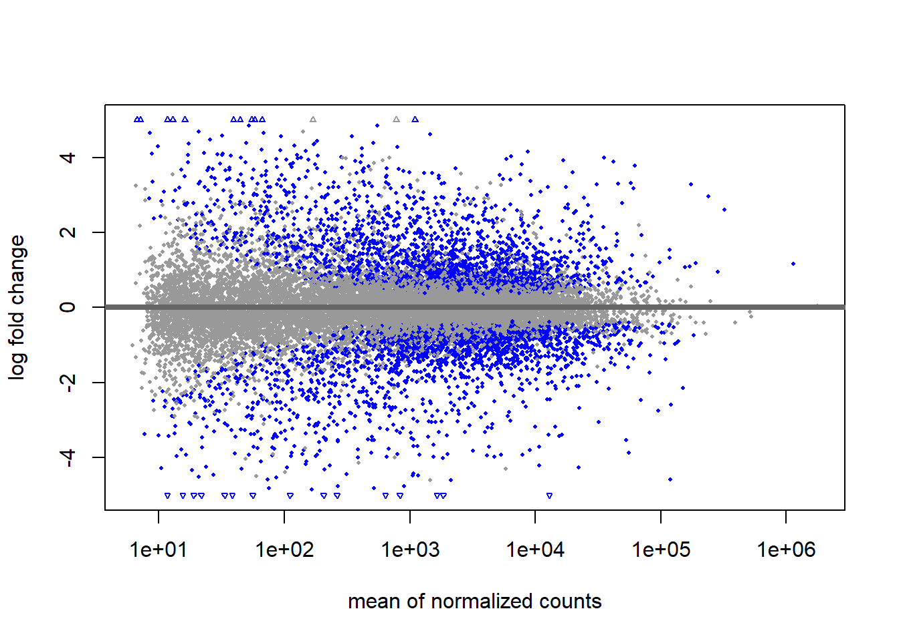
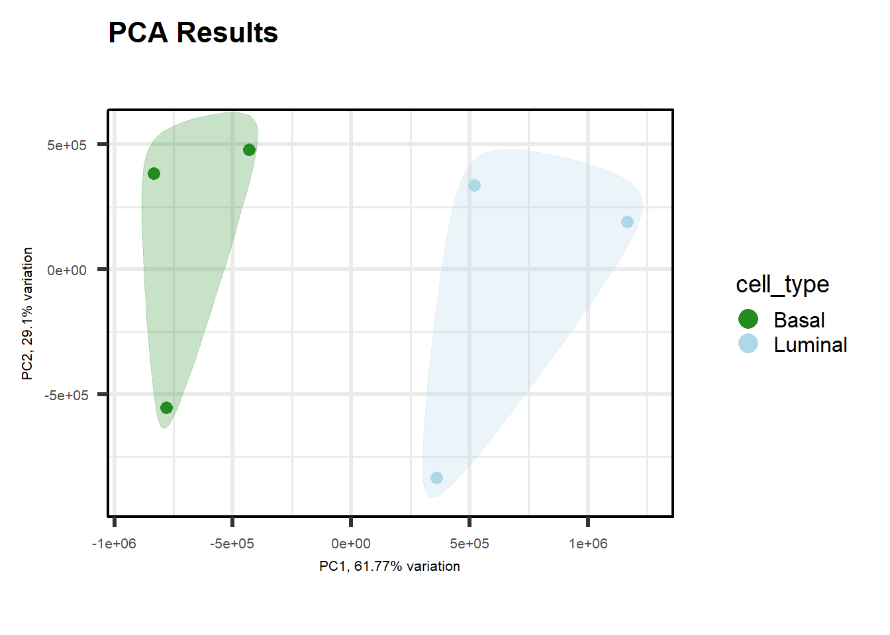
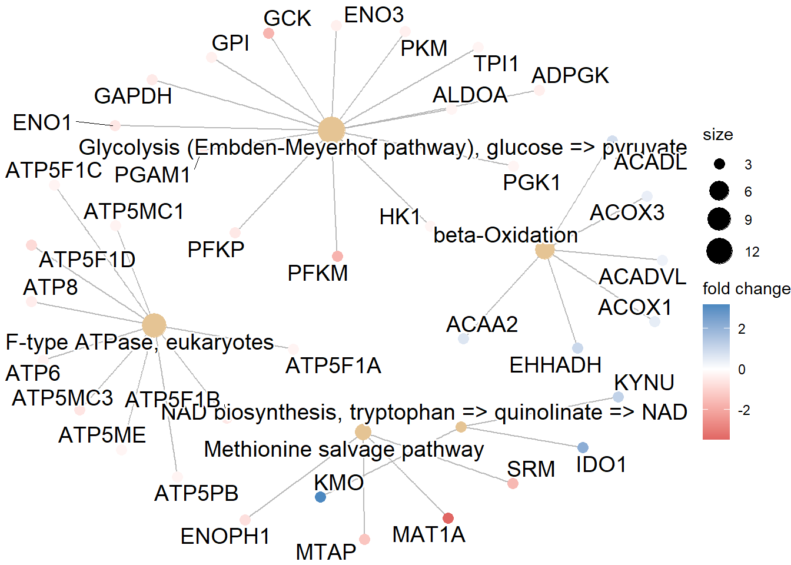
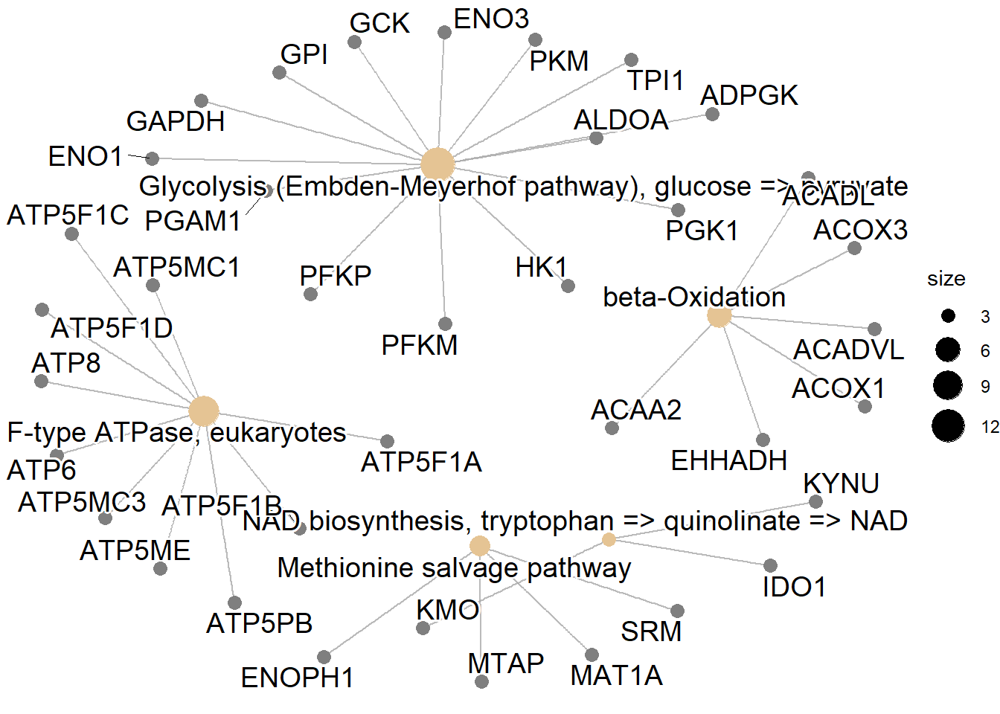
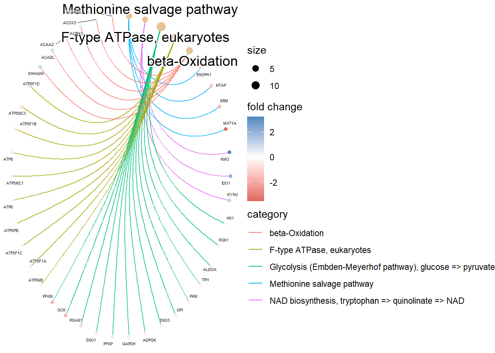
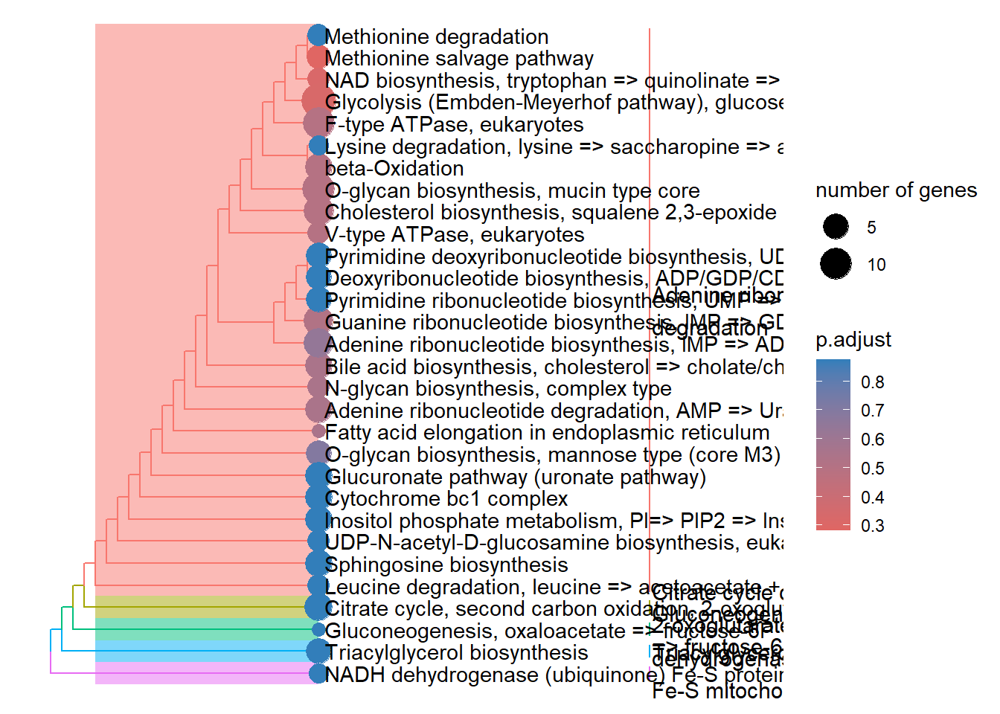
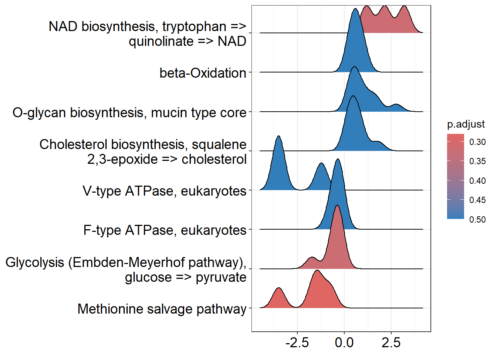

rm -rf anaconda3/
rm -rf miniconda3/Bulk RNAseq
#Instalación de Mamba y Salmon (en terminal) En un primer momento íbamos a instalar Salmon (enlace a documentacion GitHub de Salmon) con Anaconda pero daba problemas a la hora de realizar la instalación de Salmon. Luego procedimos a la instalación de Mamba (Enlace a página de Mamaba y de e instalación) a través de Anaconda pero crasheaba en la instalación. Buscando en webs hemos encontrado que no es recomendable tener instalado Anaconda y Mamba a la vez de manera que hemos borrado los repositorios de Anacoda del servidor (y de miniconda, que tener miniconda y Anaconda no tenia ningún sentido porque Anaconda es más rápido y grande que miniconda de manera que era absurdo). Para eliminar tanto Anaconda (que se encontraba e la carpeta anaconda3) como Miniconda (que se encontraba en la carpeta miniconda3) hemos usado los siguientes comandos:
Note
Todo lo hecho a partir de aquí está en Terminal_9-19-23.txt
Ya podemos proceder a la instalación de Mamba. Es preferible la instalación de Mamba porque es como Anaconda pero con esteroides (según el bioinformático de Manuel Irimia). En primer lugar vamos a instalar Mamba:
curl -L -O "https://github.com/conda-forge/miniforge/releases/latest/download/Mambaforge-$(uname)-$(uname -m).sh"A continuación podemos instalar el programa Salmon para el análisis de Bulk RNAseq con los siguientes comandos. Primero comprobamos qué versiones podemos instalar (para descargarnos la última versión):
mamba search salmonNos saldrá un listado de versiones disponibles para la instalación de Salmon y tendremos que instalar la versión que queramos (en nuestro caso vamos a instalar la última versión, que corresponde a la 1.10.3):
mamba create -n salmon salmon=1.10.2Es una buena práctica comprobar que se ha instalado de forma adecuada (activando Salmon y comprobando la versión:
mamba activate salmon
salmon –versionEl output será el siguiente:
salmon 1.10.2Cerramos salmon:
salmon deactivateAdemás es buena práctica también comprobar que las instalaciones que hemos hecho previamente (en nuestro caso matt, vast-tools y SRA-Toolkit) no se han visto afectadas por la instalación de Mamba:
vast-tools –help
matt –help
fastq-dump --helpYa podemos proceder a usar Salmon.
1 Salmon
Para generar los alineamientos y cuantificación primero tenemos que tener un genoma de referencia.
1.1 Generar el genoma de referencia
Para descarganos el genoma de referencia que queramos evaluar vamos a utilizar la base de datos Ensembl. En la web accedemos a la especie que queramos (en nuestro ejemplo Homo sapiens).
A continuación, es la sección de Gene_annotation seleccionamos la opción de descargarnos bases de datos en formato FASTA.
Esto nos llevará un repositorio donde tendremos distintas referencias del genoma:
- Transcritos (cdna/)
- Regiones codificantes (cds/)
- Regiones del genoma/cromosomas (dna/)
- Parece un índice del anterior (dna/index)
- Non-coding RNA (ncrna/)
- Péptidos para proteómica (pep/)
Lo habitual para cuantificar genes por RNAseq es descargarse los transcritos de manera que vamos a seleccionar “cdna/” y dentro de las opciones que hay en este en nuestro caso hemos elegido el indicado con rojo.
Tenemos que clickar con el botón derecho y copiar la dirección de enlace para en nuestro terminal descargarnos este archivo con la función wget.
Lo más conveniente para llevar a cabo la descarga de genomas de referencia es crear una carpeta para esto, de manera que la creamos:
mkdir Genome_RefsVamos a esta carpeta y usamos el comando wget:
wget https://ftp.ensembl.org/pub/release-110/fasta/homo_sapiens/cdna/Homo_sapieCh38.cdna.all.fa.gzEsto nos descarga el .gz del genoma elegido en nuestra carpeta. Ahora generamos el índice con salmon:
salmon index -t Homo_sapiens.GRCh38.cdna.all.fa.gz -i Transcriptome_Index_Ref_Hsa_v38Con este comando decimos con “-t <archivo.gz>” el archivo que tiene que leer, que en nuestro caso es el que nos acabamos de descargar de Ensembl. Con el argumento -i Transcriptome_Index_Ref_Hsa_v38. Este es el nombre que luego usaremos en la cuantificación. Ya que estaba me he dejado descargado los genomas de ratón (v.39) y rata (v.7.2) por si los necesitamos en algún momento.
1.2 Comprobar la calidad de las muestras secuenciadas (fastQC)
Es de buena praxis comprobar la calidad de los resultados de la secuenciación debido a que esta puede introducir algún tipo de bias interno a la misma. Por ejemplo, un bias a corregir es el de contenido de GC, lo cual se corrige en el siguiente paso con salmon. Para correr un archivo hay que usar el siguiente comando:
fastqc Basal_1_1.fastq.gzSi queremos que se nos guarde en un directorio, primero tenemos que crearlo de firma manual y luego utilizar el argumento -o <nombre_del_directorio>:
mkdir resultados_fastqc
fastqc -o resultados_fastqc Basal_1_1.fastq.gzEsto hace que se generen unos archivos HTML que nos llevará a una página en la que podemos ver la calidad de la muestra. Para conocer lo que significa cada uno de los apartados podemos acceder a este enlace y si queremos también tenemos un video tutorial donde se explica cada cosa. Si tenemos muchas muestras y queremos verlas todas juntas podemos utilizar la herramienta multiQC. Para utilizar esta herramienta la hemos instalado desde mamba y para ejecutarla (suponiendo que hemos generado la carpeta anterior “resultados_fastqc”) tenemos que ejecutar el comando seguido del nombre de la carpeta.
multiqc resultados_fastqcSi estamos en la misma carpeta donde se han generado todos los archivos fastqc (es decir, dentro de “resultados_fastqc” para nuestro ejemplo) el comando sería el siguiente:
multiqc .
Tip
(hay un script hecho en el terminal para usarlo como plantilla para que lo haga automático todo).
1.3 Alineamiento y cuantificación con Salmon
Para realizar la cuantificación tenemos que tener en cuenta el tipo de secuenciación que hemos realizado. La secuenciación para una muestra ha podido ser Single-End o Paired-End. Asimismo para una misma muestra se han podido secuenciar una única réplica o dos replicas para una mayor fiabilidad de la secuenciación. De esta manera, se han podido generar los siguientes archivos (se va a usar el nombre sample de ejemplo para explicar el número de archivos que podemos tener):
Teniendo esto en cuenta vamos a cuantificar nuestra muestras con la función “salmon quant” en el formato mapping-based mode (recordatorio de que tenemos que estar en el entorno salmon para hacer esto, el cual se activa con el comando “mamba actívate salmon” y que tenemos que estar en la carpeta donde tengamos las muestras descargadas). Para llevar a cabo la cuantificación el imput variará en función de la elección que hayamos cogido. Si hemos hecho Opción 1 o 2, es decir, solo hemos secuenciado una réplica de cada muestra, tenemos que usar el comando -r <argumento>. Para la Opción 1 el comando para la cuantificación sería el siguiente:
salmon quant -i transcripts_index -l A -r Sample_1.fastq.gz --validateMappings -o transcripts_quantDonde: - -i <opción>. Indica el genoma de referencia para hacer el mapeo (en nuestro ejemplo sería el nombre de la dirección del genoma humano que hemos descargado previamente, “/home/raul/Genome_Refs/Transcriptome_Index_Ref_Hsa_v38/”). Esta parte del comando será la misma para los siguientes opciones. - -l <opción>. Indica el formato en el que se han generado las librerías. Nosotros vamos a usar siempre la opción “A”, que es una opción de salmon que identifica el tipo de librería que hemos utilizado. Esta parte del comando será la misma para los siguientes opciones. - -r <nombre_muestra>. Aquí indicamos el nombre de nuestra muestra. Este argumento es el que variará posteriormente para analizar las distintas opciones. - --validateMapping. Permite que Salmon realice una validación adicional de los emparejamientos (mappings) entre las lecturas y las secuencias de referencia durante el proceso de cuantificación de expresión génica. Esta parte del comando será la misma para los siguientes opciones. - -o <nombre_carpeta>. Este argumento genera una carpeta con el nombre que pongamos tras el comando -o. Esta parte del comando será la misma para los siguientes
Tip
NOTA: Si en el fastQC hemos tenido un enriquecimiento en GC tenemos que llevar a cabo una corrección de este error, de manera que tenemos que deberíamos añadir al comando anterior (independientemente de la opción de tipo de muestra que tengamos) el argumento --gcBias
Para la Opción 2 el comando para la cuantificación sería el siguiente:
salmon quant -i transcripts_index -l A -1 Sample_1_1.fastq.gz -2 Sample_1_2.fastq.gz --validateMappings -o transcripts_quantDonde: - -i <opción>. Explicado en opción 1. - -l <opción>. Explicado en opción 1. - -1 <nombre_muestra_1_1>. Aquí indicamos el nombre del primer sentido de secuenciación de nuestra muestra.
- -2 <nombre_muestra_1_2>. Aquí indicamos el nombre del segundo sentido de secuenciación de nuestra muestra. - --validateMapping. Explicado en opción 1. - -o <nombre_carpeta>. Explicado en opción 1.
Para la Opción 3 el comando para la cuantificación sería el siguiente:
salmon quant -i transcripts_index -l A -r Sample_Rep1.fastq.gz Sample_Rep2.fastq.gz --validateMappings -o transcripts_quantDonde: - -i <opción>. Explicado en opción 1. - -l <opción>. Explicado en opción 1. - -r <nombre_muestra_Replica_1 nombre_muestra_Replica_2>. Aquí incluimos las dos replicas de nuestra muestra.
- --validateMapping. Explicado en opción 1. - -o <nombre_carpeta>. Explicado en opción 1.
Para la Opción 4 el comando para la cuantificación sería el siguiente:
Donde: - -i <opción>. Explicado en opción 1. - -l <opción>. Explicado en opción 1. - -r <nombre_muestra_Replica_1 nombre_muestra_Replica_2>. Aquí incluimos las dos replicas de nuestra muestra. - -2 <nombre_muestra_Replica_1_2 nombre_muestra_Replica_2_2>. Aquí incluimos las dos segundas replicas de nuestra muestra. Es muy importante que las réplicas se ordenen igual que en el primer argumento -1. - --validateMapping. Explicado en opción 1. - -o <nombre_carpeta>. Explicado en opción 1.
Tras la explicación teórica, continuamos con nuestro archivo de ejemplo. Para procesar la primera muestra (Basal_1), el comando sería el siguiente:
salmon quant -i /home/raul/Genome_Refs/Transcriptome_Index_Ref_Hsa_v38/ -l A -1 Basal_1_1.fastq.gz -2 Basal_1_2.fastq.gz --validateMappings -o transcripts_quant
Código para todas las muestras a la vez
Para correr todas las muestras a la vez tenemos la opción de crear un script sencillito de bash para que se ejecuten todas las muestras que tenemos. Lo más cómodo es abrir un entorno screen para trabajar allí y luego poder desvincularlo por si nos tenemos que ir o algo, para que no se pare. Una vez abierto el screen, tenemos que abrir el entono salmon (mamba actívate salmon). Los pasos son los siguientes:
- Crear el script con el editor de texto
nano
nano run_Salmon_Mapping.bash- Esto nos abre una pantalla en la que podemos escribir, ahí podremos escribir las funciones que queramos que se ejecuten:
#!/bin/bash
# Comando para procesar el archivo 1
salmon quant -i /home/raul/Genome_Refs/Transcriptome_Index_Ref_Hsa_v38/ -l A -1 Basal_1_1.fastq.gz -2 Basal_1_2.fastq.gz --validateMappings -o transcripts_quant/Basal_1
echo "Basal_1 procesado"
# Comando para procesar el archivo 2
salmon quant -i /home/raul/Genome_Refs/Transcriptome_Index_Ref_Hsa_v38/ -l A -1 Basal_2_1.fastq.gz -2 Basal_2_2.fastq.gz --validateMappings -o transcripts_quant /Basal_2
echo "Basal_2 procesado"
# Comando para procesar el archivo 3
salmon quant -i /home/raul/Genome_Refs/Transcriptome_Index_Ref_Hsa_v38/ -l A -1 Basal_3_1.fastq.gz -2 Basal_3_2.fastq.gz --validateMappings -o transcripts_quant/Basal_3
echo "Basal_3 procesado"
# Comando para procesar el archivo 4
salmon quant -i /home/raul/Genome_Refs/Transcriptome_Index_Ref_Hsa_v38/ -l A -1 Luminal_1_1.fastq.gz -2 Luminal_1_2.fastq.gz --validateMappings -o transcripts_quant/Luminal_1
echo "Luminal_1 procesado"
# Comando para procesar el archivo 5
salmon quant -i /home/raul/Genome_Refs/Transcriptome_Index_Ref_Hsa_v38/ -l A -1 Luminal_2_1.fastq.gz -2 Luminal_2_2.fastq.gz --validateMappings -o transcripts_quant Luminal_2
echo "Luminal_2 procesado"
# Comando para procesar el archivo 6
salmon quant -i /home/raul/Genome_Refs/Transcriptome_Index_Ref_Hsa_v38/ -l A -1 Luminal_3_1.fastq.gz -2 Luminal_3_2.fastq.gz --validateMappings -o transcripts_quant/Luminal_3
echo "Luminal_3 procesado"
echo "Procesamiento completado para todos los archivos"- Esto hará que se procese un archivo tras otro y se vaya guardando en una subcarpeta dentro de la carpeta que se va a crear
transcripts_quant/subcarpeta_por_muestra, porque sino se sobreescribirá siempre la misma carpeta (habla la voz de la experiencia amigo/a….) y que cada vez que acabe un archivo nos salga un mensaje de que ya está procesado y cuando acaba nos dirá que ya se ha completado el proceso. Para guardar el archivo sigue estos pasos: 1) PresionaCtrl + O(mantén presionada la tecla Control y luego presiona la letra “O”). Te preguntaráFile Name to Write. Presiona “Enter” para confirmar el nombre del archivo; 2) Para salir del editor nano, presionaCtrl + X.
- Para ejecutar el archivo debemos asegurarnos de tener los permisos de ejecución del script:
Chmod +x run_Salmon_Mapping.bash- Ya podemos ejecutar el script (debemos de estar en la carpeta que lo contenga y tener el entorno de salmon abierto con (mamba actívate salmon))
./run_Salmon_Mapping.bashTras esto podremos hacer Ctrl + a + d para desvincular la sesión de screen y esperar a que acabe.
Los archivos quant.sf van a tener el siguiente contenido:
Las columnas tienen la siguiente interpretación. - Name - Es el nombre del transcrito objetivo proporcionado en la base de datos de transcritos de entrada (archivo FASTA). - Length - Es la longitud del transcrito objetivo en nucleótidos. - EffectiveLength - Es la longitud efectiva calculada del transcrito objetivo. Tiene en cuenta todos los factores que se están modelando y que afectarán a la probabilidad de muestreo de fragmentos de este transcrito, incluyendo la distribución de la longitud del fragmento y el sesgo específico de la secuencia y del fragmento gc (si se están modelando). - TPM - Es la estimación del salmón de la abundancia relativa de este transcrito en unidades de Transcritos Por Millón (TPM). TPM es la medida de abundancia relativa recomendada para el análisis posterior. - NumReads - Es la estimación de Salmon del número de lecturas que corresponden a cada transcrito cuantificado. Es una “estimación” en la medida en que es el número esperado de lecturas que se han originado a partir de cada transcrito dada la estructura de las lecturas de mapeo único y mapeo múltiple y las estimaciones de abundancia relativa para cada transcrito.
Note
Todo lo hecho a partir de aquí está en Terminal_9-20-23.txt
El siguiente paso va a ser unir todos los archivos .sf en el que tenemos la cuantificación de cada una de las muestras para generar la matriz de datos para hacer los análisis.
Al haber comparado con el transcriptoma de referencia, lo que nos va a generar salmon con cada uno de los archivos .sf es literalmente el transcriptoma, es decir, todos los transcritos de cada uno de los genes. Esto no es correcto analizarlo directamente. Es útil tener la información de cada uno de los transcritos de cada gen (especialmente si luego vamos a comparar con splicing alternativo) pero lo verdaderamente correcto es resumir y poner en conjunto la información de todos los transcrito para ver la expresión del gen en concreto. Para hacer esto tenemos que descargarnos un paquete de R que lo hace automáticamente. Además este paquete crea una matriz con todos los genes (en las filas) y todas las muestras que hemos analizado (en columnas) con salmon de manera que estaremos evaluando correctamente la expresión génica.
2 Compilacion de datos con Tximport (R)
Important
#A partir de aquí seguior en R (o RStudio)
Tenemos que instalar tximport para llevar a cabo esta compilación de datos de transcritos para poder analizar expresión génica. Este paquete no tiene instalado genoma o transcriptoma de manera que lo mejor es que, como nosotros estamos usando genomas de referencia para las anotaciones obtenidos de Ensembl, tenemos que instalar el paquete ensembldb con el cual podremos hacer llamada a las versiones de ensemble más actuales (que son las que estamos usando nosotros). Ambos son paquetes de Bioconductor, de manera que se tienen que instalar con BiocManager. Por esto, entramos en R e instalamos los siguientes paquetes:
if (!require("BiocManager", quietly = TRUE))
install.packages("BiocManager")
BiocManager::install("ensembldb")
BiocManager::install("tximport")Una vez instalados pasamos a importarlos datos de los archivos “quant.sf”. Para ello, lo primero que tenemos que cargar es el genoma de referencia que hayamos usado con el paquete “ensembldb” que acabamos de instalar. Vamos a activar (con library(EnsDb.Hsapiens.v86)) el paquete de la última versión de transcritos del genoma humano que hay disponible hasta la fecha (a 20/09/2023, la última versión del genoma humano es la 38, que se incluyó en Ensembl con la versión de actualización v.86):
library(EnsDb.Hsapiens.v86)Puede ser (como me pasó a mi) que nos de error y nos diga que no tenemos este paqute instalado (que supuestamente se ha tenido que instalar con el paquete ensembl), en ese caso primero lo instalamos y luego lo cargamos:
BiocManager::install("EnsDb.Hsapiens.v86")
library(EnsDb.Hsapiens.v86)Esta es la versión para el genoma humano, si tuvieramos el genoma de ratón o rata deberíamos buscar cuál es el genoma que debemos usar en función del que hayamos usado para el mapeo.
Ahora tenemos que crear la matrix donde tximport va a hacer la búsqueda de a qué gen corresponde cada transcrito para así calcular dicha expresión génica:
tx2gene<-transcripts(EnsDb.Hsapiens.v86, columns=c("tx_id", "gene_id"), return.type="DataFrame")
¿Quieres curiosear sobre las posibilidades?
Para buscar más información acerca de como usar estos comandos o la información a recuperar debemos de irnos aquí.
También tenemos que hacer llamada al paquete que vamos a utilizar para la compilación:
library(tximport)A continuación pasamos a crear una variable que contiene las rutas que contienen los archivos “quant.sf” generados con salmon:
files<-file.path("/home/raul/Fran/Basal_vs_Luminal/matt_analyses/rnaseq_data", "transcripts_quant", c("Basal_1", "Basal_2", "Basal_3", "Luminal_1", "Luminal_2", "Luminal_3"), "quant.sf")Con este código creamos una serie de rutas en la misma variable para todas las que tienen un directorio común (en nuestro caso, la carpeta “transcripts_quant”, es la que contiene las carpetas que a su vez contienen los archivos “quant.sf”). En el primer argumento tenemos que poner la dirección donde se encuentra la carpeta de interés (“transcripts_quant”). En el segundo argumento tenemos que poner el nombre de nuestra carpeta de interés (como son varias se pone en forma de cadena c("Basal_1", "Basal_2", "Basal_3", "Luminal_1", "Luminal_2", "Luminal_3")). En el tercer argumento tenemos que poner los nombres de las carpetas que se han generado con salmon para cada una de las muestras (en este caso son pocas y las hemos puesto con una cadena pero podemos crear un .txt o un .csv para cuando tengamos una larga lista de muestras analizadas). Por último, tenemos que poner el archivo “quant.sf” que es el que genera para cada muestra, de manera que esto es común.
A continuación ponemos a cada muestra el nombre que queramos.
names(files)<-c("Basal_1", "Basal_2", "Basal_3", "Luminal_1", "Luminal_2", "Luminal_3")Aquí podríamos indicar el mismo archivo que en el argumento 3 del comando anterior.
Por último ejecutamos el comando de compilación:
txi.salmon<-tximport(files, type="salmon", tx2gene=tx2gene, ignoreTxVersion=TRUE)La función tximport() llevará a cabo la compilación de datos. En el primer argumento pones donde hemos guardado las rutas donde están los archivos “quant.sf” (cuyas rutas hemos guardado en la variable files. En el segundo argumento (type = xxxx) ponemos el origen de los archivos, que en nuestro caso es siempre “salmon”. En el tercer argumento especificamos dónde se encuentran los identificadores para la compilación. Con el argumento ignoreTxVersion=TRUE hacemos que se puedan comparar porque salmon pone los transcritos con la extensión de la versión y los listados que nos descargamos para el argumento 3 no trae las extensiones de las versiones.
Note
En nuestro caso hemos usado “salmon”, que nos genera las counts para cada gen. Hay otros tipos de paquetes que generan abundancia (expresión en TPMs) y para hacer el análisis de expresión diferencial con DESeq2 o con edge necesitamos dichas counts. El paquete tximport te permite una estimación de estas counts a partir de la abundacia con el argumento countsFromAbundance.
Por último, para guardar el archivo podemos crear un .csv con los datos:
write.csv(txi.salmon$counts, file="Basal_vs_Luminal.csv")3 Workflow DESeq2
Dejo aquí un link de unos seminarios de la universidad de Harvard en los que está todo super explicado:
3.1 Importar datos
Una vez que hemos termimado de extraer las counts con salmon en el terminal y hemos generado un .csv con la expresión tenemos que instalar DESeq2, que es la herramienta que vamos a utilizar para normalizar y graficar los datos que hemos obtenido.
Primero instalamos todos lo paquetes que vamos a necesitar:
if (!require("BiocManager", quietly = TRUE))
install.packages("BiocManager")
BiocManager::install("DESeq2", dependencies = TRUE)
install.packages("ggplot2", dependencies = TRUE)
#los siguientes paquetes son para representaciones y gestión de datos
install.packages("pheatmap", dependencies = TRUE)
install.packages("RColorBrewer", dependencies = TRUE)
install.packages("tidyverse", dependencies = TRUE)
BiocManager::install("ashr", dependencies = TRUE)
install.packages("ggrepel")
BiocManager::install("EnsDb.Hsapiens.v86", dependencies = TRUE)
BiocManager::install("biomaRt", dependencies = TRUE)
BiocManager::install("PCAtools")
install.packages("magick")Y cargamos las bibliotecas:
library(DESeq2)
library(ggplot2)
#los siguientes paquetes son para representaciones de datos
library(pheatmap)
library(RColorBrewer)
library(dplyr)
library(tidyverse)
library(ashr)
library(ggrepel)
library(EnsDb.Hsapiens.v86)
library(biomaRt)
library(PCAtools)
library(magick)Ahora podemos cargar los datos que hemos generado el .csv:
| Basal_1 | Basal_2 | Basal_3 | Luminal_1 | Luminal_2 | Luminal_3 | |
|---|---|---|---|---|---|---|
| ENSG00000000003 | 3063.523 | 2595.819 | 1858.888 | 5484.804 | 5835.183 | 5282.971 |
| ENSG00000000005 | 0.000 | 1.000 | 3.000 | 0.000 | 0.000 | 0.000 |
| ENSG00000000419 | 5789.018 | 3872.824 | 4193.611 | 4048.758 | 2490.729 | 3660.102 |
| ENSG00000000457 | 2009.020 | 1613.409 | 1420.251 | 3384.663 | 2402.486 | 2763.960 |
| ENSG00000000460 | 614.459 | 400.559 | 455.363 | 826.121 | 505.659 | 613.572 |
| ENSG00000000938 | 18.000 | 93.000 | 26.000 | 9.000 | 33.000 | 8.000 |
Formato de la metadata
Tenemos que crear un .csv de metada para poder analizar las distintas variables. Este archivo lo podemos crear mediante excel, en el cual en la primera columna tiene que estar el id de las muestras (el nombre que hayamos puesto a la muestra durante el análisis con salmon) y en el resto de columnos vamos metiendo variables de análisis. La primera fila tiene que tener el encabezado de la columna. Tenemos que asegurarnos de guardarlo en .csv y modificarlo desde el editor de texto para que esté verdaderamente separado con comas (ya que al crearlo en excel se nos guardará separado por “;”, en definitiva es hacer lo mismo que cuando queremos cargar algo en metaboanalyst).
Ahora podemos cargar el archivo que hemos creado con la metadata de las muestras. Tenemos que convertir en factor todas las variables que lo sean (no he probado con variables continuas):
metaData <- as.data.frame(read.csv('Metadata_Basal_vs_Luminal.csv', header = TRUE, row.name=1, sep = ","))
metaData[,c(1:ncol(metaData))]<-as.factor(metaData[,c(1:ncol(metaData))])
head(metaData) cell_type
Basal_1 Basal
Basal_2 Basal
Basal_3 Basal
Luminal_1 Luminal
Luminal_2 Luminal
Luminal_3 LuminalVamos a introducir un paso de checkeo de que los nombres de las columnas de la matriz de datos y los nombre de las filas de matriz de MetaData están en el mismo orden para así estar seguros de que se van a cargar bien en el paquete:
all(rownames(metaData) == colnames(countData))[1] TRUEA continuación vamos a crear el dataframe que contendrá el análisis con el siguiente comando:
dds <- DESeqDataSetFromMatrix(countData=round(countData),
colData=metaData,
design=~cell_type)converting counts to integer modeCon el argumento countData definimos la variable en la que tenemos guardada la matriz de expresión de cada uno de los genes. Con el argumento colData vamos a definir el archivo en el que tenemos la metadata de las muestras. Con el argumento desing= vamos a definir cómo vamos a crear los grupos de comparación. Para ello tenemos que poner la virgulilla, es decir, “~” seguido del nombre de la columna que contenga la variable diferencial en la que basarse para crear los grupos. Si tuvieramos más grupos de interés para incluir en el análisis (tienen que estar incluidos en el archivo metadata) deberíamos añadirlos como en el siguiente ejemplo:
dds <- DESeqDataSetFromMatrix(countData=round(countData),
colData=metaData,
design=~cell_type + tissue + sex + age)con este ejemplo, imaginando que pueden ser células de cualquier tejido, la comparación se calculará para tipo de células (cell_type), para el tipo de tejido (tissue), para el sexo del individuo (sex) y para la edad del mismo (age).
3.2 Preprocesamiento (prefiltrado)
Si bien no es necesario filtrar previamente los genes de conteo bajo antes de ejecutar las funciones de DESeq2, hay dos razones que hacen que el filtrado previo sea útil: al eliminar filas en las que hay muy pocas lecturas, reducimos el tamaño de la memoria del objeto de datos dds, y aumentamos la velocidad del modelado de conteo dentro de DESeq2. También puede mejorar las visualizaciones, ya que las características sin información para la expresión diferencial no se trazan en diagramas de dispersión o diagramas MA.
Aquí realizamos un filtrado previo para mantener solo las filas que tienen un recuento de al menos 10 para una cantidad mínima de muestras. El recuento de 10 es una opción razonable para la secuenciación de ARN masiva. Una recomendación para el número mínimo de muestras es especificar el tamaño de grupo más pequeño; por ejemplo, aquí hay 3 muestras tratadas. Si no hay grupos discretos, se puede utilizar el número mínimo de muestras donde los recuentos distintos de cero se considerarían interesantes. También se puede omitir este paso por completo y simplemente confiar en los procedimientos de filtrado independientes.
smallestGroupSize <- 3
keep <- rowSums(counts(dds) >= 10) >= smallestGroupSize
dds <- dds[keep,]A continuación es importante establecer cuál va a ser el grupo de control de los que tenemos (en nuestro caso van a ser las células basales):
dds$condition<-relevel(dds$cell_type, ref="Basal")El análisis de expresión diferencial propiamente dicho lo hacemos con la función DESeq(), y ya calcula muchas cosas (de forma automática) de las que vamos a ir viendo ahora. Pero para mejorar el entendimiento del trabajo con los datos no vamos a adelantar aconteciminetos, así que por ahora no lo vamos a usar y vamos a ver como se normalizan estos datos.
La función DESeq() realiza de forma automática los siguientes análisis:
- Estimar los “size factors” (el peso que tiene en la dispersión de los valores de cada muestra la variable que estamos utilizando para la comparación)
- Estimar la dispersión génica (como aumenta la variabilidad en función del número de transcritos, esto es intrínseco a la metodología de manera que hay que corregirlo)
- Corregir la dispersión génica (se realiza con estimaciones con respecto al modelo al que debería ajustarse la disperisón de los datos, pero como toda estimación, necesita ser corregiva para evitar sobreestimaciones, es decir, falsos positivos)
- Reducción de las estimaciones de la dispersión por la corrección
3.3 Análisis de calidad de las muestras (QC Analyses)
Los siguientes pasos son la normalización y análisis no supervisado de las muestras para evaluar la calidad de las mismas.
3.3.1 Normalización
Vamos a seguir los pasos del workshop de Harvard que encontré (que está genial), en este caso vamos a usar el archivo Introduction to DGE donde está super bien explicado a nivel teórico (con esquemas y todo). Si queremos mayor profundidad a nivel matemáticod beremos acceder a la vignette de DESeq2. El primer paso de todo análisis de expresión diferencial es una normalización de los counts para que la comparación entre muestras sea más certera y fiable. Los pricipales factores que se deben de considerar para la normalización son:
- Profuncidad de la secuenciación
- Longitud del gen
- Composición del RNA
Estos términos están perfectamente explicados en Introduction to DGE, además incluye una tabla con los métodos de normalización para RNAseq con ventajas y desventajas.
DESeq2 utiliza un método de normalización de las counts dividads por factores de tamaño específicos de la muestra determinados por la relación mediana de los recuentos de genes en relación con la media geométrica por gen. Esta normalización hace que sea muy potente para la el análsis de expresión diderencial, pero no lo podemos utilizar para una comparación entre genes de una misma muestra
Note
(para eso deberíamos utilizar la expresión normalizada por TPM, es decir, utilizar la matriz de tximpor recupenrando los datos de la columna de “abundancia”). Perfectamente explicado, de nuevo, en Introduction to DGE.
Para acceder a los size factors si hubieramos utilizado la función DESeq() podriamos utilizar la función sizeFactors directamente:
#hacemos el análisis y lo definimos en la varibale dds_DEs
dds_DEs<-DESeq(dds)
#y ahora extraeríamos los datos
sizeFactors(dds_DEs)Pero como todavía NO hemos utilizado todavía la función DEseq() y queremos averiguar los “size factors” de nuestra matriz, primero temnemos que usar la función estimateSizeFactors() para calcular dichos factores e incluirlos en el data frame dds. El código sería el siguiente:*
#Calculamos los factores y lo metemos en la variable dds
dds <- estimateSizeFactors(dds)
#y ahora podríamos acceder a esos datos
sizeFactors(dds) Basal_1 Basal_2 Basal_3 Luminal_1 Luminal_2 Luminal_3
1.1167981 1.0037478 0.9737041 1.0030643 0.9418799 0.9892795 Ahora podríamos extraer los datos normalizados (con la función counts() en una matriz de datos distinta para así poder trabajar con ellos:
normalized_counts<-counts(dds, normalized=TRUE)
head(normalized_counts) Basal_1 Basal_2 Basal_3 Luminal_1 Luminal_2
ENSG00000000003 2743.55778 2586.30696 1909.20427 5468.243490 6195.05740
ENSG00000000419 5183.56918 3858.53884 4307.26343 4036.630427 2644.71088
ENSG00000000457 1798.89281 1606.97732 1458.34861 3374.658927 2550.21900
ENSG00000000460 549.78606 399.50273 467.28776 823.476595 537.22349
ENSG00000000938 16.11751 92.65275 26.70216 8.972505 35.03631
ENSG00000000971 4315.91008 3637.36776 2018.06691 6813.122335 3766.93464
Luminal_3
ENSG00000000003 5340.250419
ENSG00000000419 3699.662414
ENSG00000000457 2793.952709
ENSG00000000460 620.653749
ENSG00000000938 8.086694
ENSG00000000971 2155.103898Vamos a extraer estos datos normalizados en un archivo para utilizarlos más adelante:
write.csv(normalized_counts, file="/normalized_counts.csv")
Note
DESeq2 no utiliza realmente counts normalizadas, sino que utiliza los counts brutos y modela la normalización dentro del Modelo Lineal Generalizado (GLM). Estos recuentos normalizados serán útiles para la visualización posterior de los resultados, pero no se pueden utilizar como entrada para DESeq2 o cualquier otra herramienta que realice análisis de expresión diferencial que utilice el modelo binomial negativo.
3.3.2 Análisis de clustering no supervisado
Para realizar el análisis de calidad de las muestras necesitamos la matriz de datos normalizados. DESeq incluye una función propia de normalización de datos muy robusta y aceptada por la comunidad, que si quereis saber cómo funciona podeis ir a la vignette de DESeq2 o a la página que os recomendé al principio que explica todo el workflow, es este caso a la sección de “QC Analysis” y leerlo: En mi caso he usado una combinación de ambas cosas para evaluar más parámetros. Para ejecutarla:
rld <- rlog(dds, blind=FALSE)El argumento blind= es para saber si la transformación debe ser ciega a la información de la muestra especificada por la fórmula de diseño. Cuando ciego es igual a TRUE (por defecto), las funciones reestimarán las dispersiones utilizando sólo un intercepto. Este argumento debería utilizarse para comparar muestras de una manera totalmente insesgada por la información sobre los grupos experimentales, por ejemplo para realizar el aseguramiento de la calidad de la muestra, como se demuestra a continuación.
Sin embargo, la estimación de la dispersión ciega no es la opción adecuada si se espera que muchos o la mayoría de los genes (filas) tengan grandes diferencias en los recuentos que puedan explicarse por el diseño experimental, y se desea transformar los datos para un análisis posterior. En este caso, el uso de la estimación ciega de la dispersión dará lugar a grandes estimaciones de la dispersión, ya que atribuye las diferencias debidas al diseño experimental como ruido no deseado, y dará lugar a una reducción excesiva de los valores transformados entre sí. Estableciendo ciego a FALSE, las dispersiones ya estimadas se utilizarán para realizar las transformaciones, o si no están presentes, se estimarán utilizando la fórmula de diseño actual. Tenga en cuenta que en la transformación sólo se utilizan las estimaciones de dispersión ajustadas de la línea de tendencia media-dispersión (la dependencia global de la dispersión respecto a la media para todo el experimento). Por lo tanto, establecer ciego a FALSE sigue siendo, en su mayor parte, no utilizar la información sobre qué muestras estaban en qué grupo experimental en la aplicación de la transformación.
En resumen, que seleccionemos FALSE.
NOTA: La función rlog() puede ser un poco lenta cuando se tienen, por ejemplo, > 20 muestras. En estas situaciones, la función vst() es mucho más rápida y realiza una transformación similar apropiada para su uso para análisis de calidad.
3.3.2.1 Barplot
Con estas gráficas vamos a mostrar el nº de counts totales para cada muestra para asegurarnos de que no están muy dispares, por lo que se utilizan los datos importados del .csv previos a la normalización (ya que solo queremos counts). para ello tenemso que trasformar los datos a dos columnas (x, el cual va a ser el nombre de la muestra, e y, que va a ser el valor de la suma de los counts de cada muestra) que son las que utilizaremos para realizar el gráfico:
#Para llevar a cabo esta parte tenemos que instalar y cargar el paquete tidyverse
sum_CD<-as.data.frame(normalized_counts) %>%
gather(columname, values) %>%
group_by(columname) %>%
summarize(Count_sum=sum(values))
#
ggplot(sum_CD, aes(x=as.factor(columname), y=Count_sum))+
geom_bar(stat="identity")+
ggtitle("Total number of counts")+
xlab("Muestras")+
ylab("Normalized counts")+
theme(legend.position="right")+
geom_text(aes(label=round(Count_sum)), color="white", vjust=1.6, size=4)Una alternativa (simplemente para ver el explorar el uso de ggplot():
sum_CD<-as.data.frame(normalized_counts) %>%
gather(columname, values) %>%
group_by(columname) %>%
summarize(Count_sum=sum(values))
#tenemos que tranformar los datos para que sea interpretable por ggplot
ggplot(sum_CD, aes(x=as.factor(columname), y=Count_sum, fill=Count_sum))+
geom_bar(stat="identity") +
scale_fill_gradientn(colors=pals::brewer.greens(15),
lim=c(0,max(sum_CD$Count_sum)))+
ggtitle("Total number of counts")+
xlab("Muestras")+
ylab("Raw counts")+
theme(legend.position="right")+
geom_text(aes(label=round(Count_sum)), color="white", vjust=1.6, size=3)Si quisieramos guardar la anterior gráfica como un documento tendremos que usar la función ggsave(), guardando la gráfica en una variable barplotcounts:
barplotcounts<-ggplot(sum_CD, aes(x=as.factor(columname), y=Count_sum, fill=Count_sum))+
geom_bar(stat="identity") +
scale_fill_gradientn(colors=pals::brewer.greens(15),
lim=c(0,max(sum_CD$Count_sum)))+
ggtitle("Total number of counts")+
xlab("Muestras")+
ylab("Raw counts")+
theme(legend.position="right")+
geom_text(aes(label=round(Count_sum)), color="white", vjust=1.6, size=3)
ggsave(barplotcounts,filename="barplotcounts.pdf", device=pdf)3.3.2.2 boxplot
Tambien podemos hacer un boxplot de los counts de las muestras normalizadas con (log10(count)+1) y ver la distribución. Esto lo podemos hacer con la función boxplot:
boxplot(log10(normalized_counts)+1,
main="Boxplot", xlab="Muestras", ylab="Normalized counts Log10(Counts)+1")O con ggplot(), Pero para hacerlo con ggplot primero necesitamos crear una matriz interpretable por ggplot para generar el gráfico. Para ello vamos a usar el paquete tidyvese(), que generará una matriz de datos que podremos utilizar (transformación a matriz larga):
#definimos la normalización para la representación como una variable independiente para trabajar de forma más sencilla.
normcounts<-as.data.frame(log10(normalized_counts)+1)
#a continuación creamos la matriz larga
long_df<-normcounts %>%
rownames_to_column(var="rowname") %>%
gather(columname, value, -rowname)
#definimos el nombre de las columnas
colnames(long_df)<-c("Ensembl_ID", "Samples", "Expression")
#también tenemos que definir las muestras como un factor para que boxplot funcione bien
long_df$Samples<-as.factor(long_df$Samples)
#ahora graficamos con ggplot
ggplot(long_df, aes(x=Samples, y=Expression)) + geom_boxplot() +
ggtitle("Boxpot") +
xlab("Samples") + ylab("Normalized expression \n log(counts)+1")Con ggplot es mucho más manejable el hacer gráficos.
3.3.2.3 PCA plot
DESe2 utiliza el paquete ggplot2 para generar gráficos. Para poder hacer el gráfico por defecto necesitamos los datos normalizados (lo que hemos hecho con la función rlog()). Por defecto podemos hacer una gráfica sencilla:
plotPCA(rld, intgroup="cell_type")También podemos customizar la gráfica con funciones del paquete ggplot2:
pcaData <- plotPCA(rld, intgroup=c("cell_type", "cell_type"), returnData=TRUE)
percentVar <- round(100 * attr(pcaData, "percentVar"))
ggplot(pcaData, aes(PC1, PC2, color=cell_type, shape=cell_type)) +
ggtitle("PCA plot of example \n RNAseq")+
geom_point(size=3) +
xlab(paste0("PC1 (",percentVar[1],"%)")) +
ylab(paste0("PC2 (",percentVar[2],"%)")) +
coord_fixed()3.3.2.4 Heatmap
También es común utilizar un heatmap para la visualización de la calidad de las muestras para ver como clusterizan:
#para utilizar esta función hemos tenido que instalar y cargar el paquete pheatmap
select<-order(rowMeans(normalized_counts),decreasing=TRUE)[1:25]
df <- metaData
pheatmap(assay(rld)[select,], cluster_rows=FALSE, show_rownames=FALSE,
cluster_cols=TRUE, annotation_col=df, main="Heatmap plot")Si tuvieramos mayor cantidad de datos clínicos o variables en metadata podríamos añadirlos de la siguiente manera (yo voy a repetir el mismo tipo de datos dos veces):
#voy a crear una nueva metadata que tenga dos veces la misma columna de cell_type para mostrar el ejemplo
metaData_ejm <- metaData
metaData_ejm[,2]<- metaData[, 1]
colnames(metaData_ejm)[2]<- c("variable imaginaria")
#y ahora haríamos el heatmap
select<-order(rowMeans(normalized_counts),decreasing=TRUE)[1:500]
#en el df tenemos que meter las variables de nuestra metaData que queramos ver
df <- metaData_ejm[,c(1, 2)]
pheatmap(assay(rld)[select,], cluster_rows=FALSE, show_rownames=FALSE,
cluster_cols=FALSE, annotation_col=df, main="Heatmap plot")Hay muchas posibilidades, buscad el paquete en google y consultais los argumentos para manipular los datos al gusto.
3.3.2.5 Distancia entre muestras
Otro uso de los datos transformados es la agrupación de muestras. En este caso, aplicamos la función dist() a la transposición de la matriz de recuento transformada para obtener distancia muestra-muestra:
sampleDists <- dist(t(assay(rld)))A continuación, si solo tenemos las muestras con una condición queremos enfrentar las muestras contra ellas mismas de manera que haríamos lo siguiente:
sampleDistMatrix <- as.matrix(sampleDists)
rownames(sampleDistMatrix) <- rld@colData@rownames
colnames(sampleDistMatrix) <- rld@colData@rownames
colors <- colorRampPalette( rev(brewer.pal(9, "Blues")) )(255)
pheatmap(sampleDistMatrix,
clustering_distance_rows=sampleDists,
clustering_distance_cols=sampleDists,
col=colors)Si tuvieramos dos o más condiciones descriptivas (en mi caso voy a repetir dos veces el tipo celular para que se pueda ver cómo se usaría el código para emparejar variables para la comparación):
#Para estos colores hemos tenido que instalar y cargar el paquete "RColorBrewer"
sampleDistMatrix <- as.matrix(sampleDists)
rownames(sampleDistMatrix) <- paste(rld$cell_type, rld$cell_type, sep="-")
colnames(sampleDistMatrix) <- NULL
colors <- colorRampPalette( rev(brewer.pal(9, "Blues")) )(255)
pheatmap(sampleDistMatrix,
clustering_distance_rows=sampleDists,
clustering_distance_cols=sampleDists,
col=colors)En el heatmap podemos ver las distancias, lo que nos da una overview sobre similaridades y diferencias entre muestras.
3.4 Análisis de Expresión diferencial (DE analysis)
Brevemente, DESeq2 modelará los recuentos brutos, utilizando factores de normalización (factores de tamaño) para tener en cuenta las diferencias en la profundidad de las bibliotecas. A continuación, estimará las dispersiones por genes y reducirá estas estimaciones para generar estimaciones más precisas de la dispersión para modelar los recuentos. Por último, DESeq2 ajustará el modelo binomial negativo y realizará pruebas de hipótesis utilizando el test de Wald o Likelihood Ratio Test (prueba de razón de verosimilitud).
La función DESeq() realiza de forma automática los siguientes análisis:
- Estimar los “size factors” (el peso que tiene en la dispersión de los valores de cada muestra la variable que estamos utilizando para la comparación)
- Estimar la dispersión génica (como aumenta la variabilidad en función del número de transcritos, esto es intrínseco a la metodología de manera que hay que corregirlo)
- Corregir la dispersión génica (se realiza con estimaciones con respecto al modelo al que debería ajustarse la disperisón de los datos, pero como toda estimación, necesita ser corregiva para evitar sobreestimaciones, es decir, falsos positivos)
- Reducción de las estimaciones de la dispersión por la corrección
dds_DEs<-DESeq(dds)using pre-existing size factorsestimating dispersionsgene-wise dispersion estimatesmean-dispersion relationshipfinal dispersion estimatesfitting model and testinghead(dds_DEs)class: DESeqDataSet
dim: 6 6
metadata(1): version
assays(4): counts mu H cooks
rownames(6): ENSG00000000003 ENSG00000000419 ... ENSG00000000938
ENSG00000000971
rowData names(22): baseMean baseVar ... deviance maxCooks
colnames(6): Basal_1 Basal_2 ... Luminal_2 Luminal_3
colData names(3): cell_type condition sizeFactor3.4.1 Modelado de las counts para cada gen y Fold changes corregidos
3.4.1.1 Generación de un modelo linaear de ajuste para cada gen
El último paso del flujo de trabajo de DESeq2 es ajustar el modelo binomial negativo para cada gen y realizar pruebas de expresión diferencial.
Como se ha comentado anteriormente, los datos de recuento generados por RNA-seq presentan sobredispersión (varianza > media) y la distribución estadística utilizada para modelar las “counts” debe tener en cuenta esta sobredispersión. DESeq2 utiliza una distribución binomial negativa para modelar los recuentos de RNA-seq.
El modelado es una forma matemática de aproximar cómo se comportan los datos dado un conjunto de parámetros (es decir, factor de tamaño, dispersión). DESeq2 utilizará esta fórmula como modelo para cada gen y ajustará a ella los datos de “counts” normalizados. Una vez ajustado el modelo, se estiman los coeficientes para cada grupo de muestras junto con su error estándar.
Los coeficientes son las estimaciones de los cambios de log2 para cada grupo de muestras. Sin embargo, estas estimaciones no tienen en cuenta la gran dispersión que observamos en los recuentos bajos de lecturas. Para evitarlo, es necesario ajustar los cambios de pliegue log2 calculados por el modelo.
3.4.1.2 Shrunken Log2 Foldchanges (LFC)
Para generar una estimación más precisa de log2 Fold Change (LFC), DESeq2 permite la reducción de las estimaciones LFC hacia cero cuando la información de un gen es baja:
- Pocas counts
- Elevados valores de dispersión
Al igual que con la reducción de las estimaciones de dispersión, la reducción de LFC utiliza información de todos los genes para generar estimaciones más precisas. En concreto, la distribución de las estimaciones de LFC para todos los genes se utiliza (como un prior) para encoger las estimaciones de LFC de los genes con poca información o alta dispersión hacia estimaciones de LFC más probables (más bajas).
Para generar esta estimación del LFC, hay que correr la función adicional (lfcSrink()).
Note
La reducción de los cambios de pliegues log2 no cambiará el número total de genes que se identifican como significativamente expresados de forma diferencial. La reducción del cambio de pliegue es para ayudar con la evaluación posterior de los resultados. Por ejemplo, si desea subconjuntar sus genes significativos basándose en el cambio de pliegue para una evaluación posterior, puede que desee utilizar los valores shruken. Además, para las herramientas de análisis funcional como GSEA que requieren valores de cambio de pliegue como entrada, usted querría proporcionar valores reducidos.
3.4.2 Evaluación de la expresión diferencial
El primer paso en la prueba de hipótesis es establecer una hipótesis nula para cada gen. En nuestro caso, la hipótesis nula es que no hay expresión diferencial en los dos grupos de muestras (LFC == 0). En segundo lugar, utilizamos una prueba estadística para determinar si, basándonos en los datos observados, la hipótesis nula es cierta.
Con DESeq2, el Test de Wald se utiliza habitualmente para la comprobación de hipótesis cuando se comparan dos grupos. Se calcula un estadístico de Test de Wald junto con una probabilidad (p-valor) de que se seleccionara al azar un estadístico de prueba al menos tan extremo como el valor observado. Si el valor p es pequeño, rechazamos la hipótesis nula y afirmamos que existen pruebas en contra de la nula (es decir, que el gen se expresa de forma diferencial).
3.4.2.1 Crear los grupos de comparación
Para indicar a DESeq2 qué dos grupos queremos comaprar, usamos la función contrasts(), la está integrada en DESeq2 para realizar este Test de Wald entre dos grupos de comparación. Las variables a comparar se pueden dar en DESeq de dos formas distintas:
No haciendo nada. Por defecto, DESeq2 utiliza el factor base de la condición de interés. El factor base de la condición de interés lo selecciona de forma alfabética.
Con la función
results()podemos definir la comparación de interés. El factor dado en último lugar se definirá como el factor base de la comparación. Para asegurarnos de tener nuestra comparación de interés usaremos esta opción. La sintaxis sería la siguiente:
#Definimos la condición a evaluar, el factor a comparar y el factor base (en ese orden), en una variable
contrast<-c("cell_type", "Luminal","Basal")
#Ahora generamos los resultados y la guardamos en una variable nueva para utilzarlos luego
res<-results(dds_DEs, contrast = contrast, alpha = 0.05)
#Visualizamos res:
head(res)log2 fold change (MLE): cell_type Luminal vs Basal
Wald test p-value: cell type Luminal vs Basal
DataFrame with 6 rows and 6 columns
baseMean log2FoldChange lfcSE stat pvalue
<numeric> <numeric> <numeric> <numeric> <numeric>
ENSG00000000003 4040.4367 1.231831 0.219235 5.618779 1.92312e-08
ENSG00000000419 3955.0625 -0.362824 0.254226 -1.427170 1.53531e-01
ENSG00000000457 2263.8416 0.841835 0.204578 4.114984 3.87207e-05
ENSG00000000460 566.3217 0.483936 0.274408 1.763562 7.78057e-02
ENSG00000000938 31.2613 -1.380236 0.972290 -1.419572 1.55732e-01
ENSG00000000971 3784.4176 0.352932 0.488092 0.723085 4.69627e-01
padj
<numeric>
ENSG00000000003 5.89919e-07
ENSG00000000419 3.41626e-01
ENSG00000000457 4.48258e-04
ENSG00000000460 2.12177e-01
ENSG00000000938 3.44979e-01
ENSG00000000971 7.05029e-01
Note
El Test de Wald tambien puede utilizar variables contínuas. Si la variable de interés dada en el diseño (con el argumento desing cuando realizamos el DESeqDataSetFromMatrix) es contínua, el report del LFC se realizará por unidad de cambio en esa variable
3.4.2.2 Contracción de la tabla de resultados
Para construir nuestra tabla de resultados utilizaremos la función results(). Para indicar a DESeq2 los grupos que deseamos comparar, introduciremos los contrastes que deseamos realizar mediante el argumento contrast. Para este ejemplo, guardaremos las versiones no reducidas y reducidas de los resultados en variables separadas. Además, incluimos el argumento alfa y lo establecemos en 0,05. Este es el límite de significación utilizado para el análisis de la varianza. Este es el límite de significación utilizado para optimizar el filtrado independiente (por defecto se establece en 0,1). Si el valor de corte p ajustado (FDR) será un valor distinto de 0,1 (para nuestra lista final de genes significativos), alfa debe fijarse en ese valor (alfa = 0.05).
#puede ser que necesitemos instalar el paquete "ashr" desde Bioconductor
#Creamos la tabla de resultados
res_table <- lfcShrink(dds_DEs, contrast=contrast, res=res, type="ashr")
#visualizamos la tabla de resultados
head(res_table)log2 fold change (MMSE): cell_type Luminal vs Basal
Wald test p-value: cell type Luminal vs Basal
DataFrame with 6 rows and 5 columns
baseMean log2FoldChange lfcSE pvalue padj
<numeric> <numeric> <numeric> <numeric> <numeric>
ENSG00000000003 4040.4367 1.127634 0.228829 1.92312e-08 5.89919e-07
ENSG00000000419 3955.0625 -0.254933 0.222360 1.53531e-01 3.41626e-01
ENSG00000000457 2263.8416 0.734814 0.205440 3.87207e-05 4.48258e-04
ENSG00000000460 566.3217 0.336907 0.244572 7.78057e-02 2.12177e-01
ENSG00000000938 31.2613 -0.376240 0.601387 1.55732e-01 3.44979e-01
ENSG00000000971 3784.4176 0.157092 0.334196 4.69627e-01 7.05029e-013.4.2.3 ¿Por qué usar el p-valor ajustado en vez del p-valor?
En results() tenemos p valores y p valores ajustados. ¿Cuál deberíamos utilizar para identificar los genes expresados de forma significativamente diferente?
Si utilizamos el p valor directamente de la prueba de Wald con un corte de significación de p < 0,05, significa que hay un 5% de posibilidades de que sea un falso positivo. Cada valor p es el resultado de una sola prueba (un solo gen). Cuantos más genes probemos, más inflamos la tasa de falsos positivos. Este es el problema de las pruebas múltiples. Por ejemplo, si probamos 20.000 genes en busca de expresión diferencial, a p < 0,05 esperaríamos encontrar 1.000 genes por azar. Si encontramos un total de 3.000 genes con expresión diferencial, aproximadamente un tercio de nuestros genes son falsos positivos. No querríamos cribar nuestros genes “significativos” para identificar cuáles son los verdaderos positivos.
DESeq2 ayuda a reducir el número de genes analizados mediante la eliminación de aquellos genes con pocas probabilidades de ser significativamente DE antes de la prueba, como aquellos con bajo número de recuentos y muestras atípicas (QC a nivel de genes). Sin embargo, aún necesitamos corregir las pruebas múltiples para reducir el número de falsos positivos, y existen algunos enfoques comunes:
Bonferroni: The adjusted p-value is calculated by: p-value * m (m = total number of tests). This is a very conservative approach with a high probability of false negatives, so is generally not recommended.
FDR/Benjamini-Hochberg: Benjamini and Hochberg (1995) defined the concept of FDR and created an algorithm to control the expected FDR below a specified level given a list of independent p-values. An interpretation of the BH method for controlling the FDR is implemented in DESeq2 in which we rank the genes by p-value, then multiply each ranked p-value by m/rank.
Q-value / Storey method: The minimum FDR that can be attained when calling that feature significant. For example, if gene X has a q-value of 0.013 it means that 1.3% of genes that show p-values at least as small as gene X are false positives
En DESeq2, los p valores obtenidos mediante la prueba de Wald se corrigen por defecto para pruebas múltiples utilizando el método de Benjamini y Hochberg. Existen opciones para utilizar otros métodos en la función results(). Los p valores ajustados deben utilizarse para determinar los genes significativos. Los genes significativos pueden mostrarse para su visualización y/o análisis funcional.
Entonces, ¿qué significa FDR < 0.05?
Al establecer el límite FDR en < 0,05, estamos diciendo que la proporción de falsos positivos que esperamos entre nuestros genes expresados diferencialmente es del 5%. Por ejemplo, si llama a 500 genes como expresados diferencialmente con un corte FDR de 0,05, espera que 25 de ellos sean falsos positivos.
3.4.2.4 MA plot
El gráfico MA muestra la media de los recuentos normalizados frente a los cambios de pliegues log2 para todos los genes analizados. Los genes que son significativamente DE están coloreados para ser fácilmente identificados. Esta es también una buena manera de ilustrar el efecto de la contracción de LFC. El paquete DESeq2 ofrece una función sencilla para generar un gráfico MA.
Para ver de forma visual en lo que consiste el ajuste de estimación que hemos hecho en el paso anterior vamos a hacer el MA plot (con la función plotMA()) con los datos sin corregir:
plotMA(res, ylim=c(-5,5))
Y ahora tras ejecutar el ajuste de estimación:
plotMA(res_table, ylim=c(-5,5))3.4.2.5 Extracción de los genes diferencialmente expresados
Con la gran lista de genes significativos puede ser difícil extraer una relevancia biológica significativa. Para ayudar a aumentar el rigor, también se puede añadir un umbral de cambio de pliegue. La función summary() no tiene un argumento para el umbral de cambio de pliegue.
Primero creemos variables que contengan nuestros criterios de umbral:
padj.cutoff <- 0.05
lfc.cutoff <- 0.58
#El lfc.cutoff() se establece en 0,58; recuerda que estamos trabajando con Fold Changes en log2, por lo que esto se traduce en un cambio de pliegue real de 1,5, que es bastante razonable.Podemos subdividir fácilmente la tabla de resultados para incluir sólo aquellos que sean significativos utilizando la función filter(), pero primero convertiremos la tabla de resultados en un tibble (matriz de elementos, como una especie de data.frame mejorado para el tratamiento de datos):
res_table_tb <- res_table %>%
data.frame() %>%
rownames_to_column(var="gene") %>%
as_tibble()
head(res_table_tb)# A tibble: 6 × 6
gene baseMean log2FoldChange lfcSE pvalue padj
<chr> <dbl> <dbl> <dbl> <dbl> <dbl>
1 ENSG00000000003 4040. 1.13 0.229 0.0000000192 0.000000590
2 ENSG00000000419 3955. -0.255 0.222 0.154 0.342
3 ENSG00000000457 2264. 0.735 0.205 0.0000387 0.000448
4 ENSG00000000460 566. 0.337 0.245 0.0778 0.212
5 ENSG00000000938 31.3 -0.376 0.601 0.156 0.345
6 ENSG00000000971 3784. 0.157 0.334 0.470 0.705 Ahora podemos hacer un subconjunto de esa tabla para conservar sólo los genes significativos utilizando nuestros umbrales predefinidos:
sig <- res_table_tb %>%
dplyr::filter(padj < padj.cutoff & abs(log2FoldChange) > lfc.cutoff)
head(sig)# A tibble: 6 × 6
gene baseMean log2FoldChange lfcSE pvalue padj
<chr> <dbl> <dbl> <dbl> <dbl> <dbl>
1 ENSG00000000003 4040. 1.13 0.229 0.0000000192 0.000000590
2 ENSG00000000457 2264. 0.735 0.205 0.0000387 0.000448
3 ENSG00000001036 1678. 0.620 0.236 0.00141 0.00922
4 ENSG00000001497 2324. -0.734 0.332 0.00262 0.0153
5 ENSG00000001561 3888. 1.71 0.330 0.00000000463 0.000000169
6 ENSG00000001626 4004. 1.68 0.942 0.00119 0.00803 ¿Cuantos genes hay diferencialmente expresados en las células luminales de próstata con respecto a las basales?
sig# A tibble: 3,188 × 6
gene baseMean log2FoldChange lfcSE pvalue padj
<chr> <dbl> <dbl> <dbl> <dbl> <dbl>
1 ENSG00000000003 4040. 1.13 0.229 0.0000000192 0.000000590
2 ENSG00000000457 2264. 0.735 0.205 0.0000387 0.000448
3 ENSG00000001036 1678. 0.620 0.236 0.00141 0.00922
4 ENSG00000001497 2324. -0.734 0.332 0.00262 0.0153
5 ENSG00000001561 3888. 1.71 0.330 0.00000000463 0.000000169
6 ENSG00000001626 4004. 1.68 0.942 0.00119 0.00803
7 ENSG00000002726 57.7 2.11 0.717 0.0000513 0.000567
8 ENSG00000003147 3870. 1.28 0.352 0.00000482 0.0000755
9 ENSG00000003249 419. 1.05 0.466 0.000853 0.00613
10 ENSG00000003400 2427. 1.89 0.353 0.00000000260 0.000000102
# ℹ 3,178 more rowsIncorporación del GeneSymbol
Por último, es recomendable asignarle a cada gen su GeneSymbol, ya que es el nombre de los genes que conocemos todos. Además para las representaciones va a ser más bonito de ver con el nombre del gen que con el código de Ensembl. Para crear este listado vamos a utilizar el paquete biomaRt.
#para este apartado hemos intalado biomaRt
ensembl = useEnsembl(biomart="ensembl", dataset="hsapiens_gene_ensembl")Como no hemos escrito versión, accederá a la última versión que tenga registrada. Si quisieramos conectar con alguna versión antigua o de otro animal tenemos que escribir la versión:
ensembl = useEnsembl(biomart="ensembl", dataset="hsapiens_gene_ensembl", version=78)Para saber qué especies contiene el dataset tenemos que cargar el paquete ensemble completo y usar el comando listDatasets(ensembl):
ensembl = useEnsembl(biomart="ensembl")
head(listDatasets(ensembl)) dataset description
1 abrachyrhynchus_gene_ensembl Pink-footed goose genes (ASM259213v1)
2 acalliptera_gene_ensembl Eastern happy genes (fAstCal1.2)
3 acarolinensis_gene_ensembl Green anole genes (AnoCar2.0v2)
4 acchrysaetos_gene_ensembl Golden eagle genes (bAquChr1.2)
5 acitrinellus_gene_ensembl Midas cichlid genes (Midas_v5)
6 amelanoleuca_gene_ensembl Giant panda genes (ASM200744v2)
version
1 ASM259213v1
2 fAstCal1.2
3 AnoCar2.0v2
4 bAquChr1.2
5 Midas_v5
6 ASM200744v2Y ya seleccionariamos la versión que quisieramos.
Continuando con la creación del listado de códigos de equivalencias de Códigos de Ensembl con GeneSymbol, el siguiente paso consistiría en crear el listado
#Definimos el DataSet que vamos a utilizar
ensembl = useEnsembl(biomart="ensembl", dataset="hsapiens_gene_ensembl")
#Creamos un listado con getBM
GeneSymbolList <-getBM(attributes=c('ensembl_gene_id','hgnc_symbol'), mart = ensembl)
#Visualizamos el listado
head(GeneSymbolList) ensembl_gene_id hgnc_symbol
1 ENSG00000210049 MT-TF
2 ENSG00000211459 MT-RNR1
3 ENSG00000210077 MT-TV
4 ENSG00000210082 MT-RNR2
5 ENSG00000209082 MT-TL1
6 ENSG00000198888 MT-ND1Ahora podemos incorporar esta info al Dataset donde tenemos los datos de Fold change con los que haremos las gráficas de representación de datos
sig_Gene_Symbol<-merge (sig, GeneSymbolList, by.x="gene", by.y="ensembl_gene_id", all.x=TRUE)
#Ahora renombramos la columna que acabamos de añadir
colnames(sig_Gene_Symbol)[7]<-c("Gene_Symbol")
#Visualizamos el listado
head(sig_Gene_Symbol) gene baseMean log2FoldChange lfcSE pvalue padj
1 ENSG00000000003 4040.437 1.1276341 0.2288288 1.923117e-08 5.899186e-07
2 ENSG00000000457 2263.842 0.7348141 0.2054399 3.872069e-05 4.482583e-04
3 ENSG00000001036 1677.821 0.6195882 0.2363429 1.409314e-03 9.224009e-03
4 ENSG00000001497 2323.912 -0.7344059 0.3315479 2.619123e-03 1.532309e-02
5 ENSG00000001561 3887.750 1.7062280 0.3304577 4.630871e-09 1.694177e-07
6 ENSG00000001626 4004.007 1.6784524 0.9423249 1.189341e-03 8.031261e-03
Gene_Symbol
1 TSPAN6
2 SCYL3
3 FUCA2
4 LAS1L
5 ENPP4
6 CFTR3.4.2.6 Representación de los genes más expresados o de una maquinaria en concreto
Esto suele requerir primero un poco de manipulación de los datos.
Vamos a trazar los valores de recuento normalizados para (por ejemplo) los 20 genes más expresados diferencialmente (por valores padj).
Para ello, primero tenemos que determinar los nombres de los 20 genes principales ordenando nuestros resultados y extrayendo los 20 genes principales (por valores padj):
top20_sig_genes <- sig_Gene_Symbol %>%
arrange(padj) %>% #Arrange rows by padj values
pull(gene) %>% #Extract character vector of ordered genes
head(n=20) #Extract the first 20 genes
head(top20_sig_genes)[1] "ENSG00000236699" "ENSG00000116299" "ENSG00000170961" "ENSG00000148677"
[5] "ENSG00000156966" "ENSG00000171812"Si queremos hacer la exploración de una maquinaria en concreto tenemos que crear un .csv que contenga el listado de los nombres de los genes que queremos extraer para cargarlos en esta variable que acabamos de crear.
Ahora extraemos los valores counts normalizadas de estos genes seleccionados:
top20_sig_norm <- as.data.frame(normalized_counts) %>%
rownames_to_column(var = "gene") %>%
dplyr::filter(gene %in% top20_sig_genes)
head(top20_sig_norm) gene Basal_1 Basal_2 Basal_3 Luminal_1 Luminal_2
1 ENSG00000004468 86.85545 47.82078 59.56635 836.43688 738.94772
2 ENSG00000101335 2401.50847 2922.04865 2619.89247 301.07740 333.37584
3 ENSG00000116299 1050.32417 832.87851 899.65731 6605.75777 7693.12526
4 ENSG00000140945 3908.49533 2657.04185 3016.31681 51.84114 78.56628
5 ENSG00000143416 694.84361 615.69249 600.79855 3716.61107 2966.40795
6 ENSG00000148677 131.62630 190.28684 131.45678 1638.97763 1794.28398
Luminal_3
1 1062.3894
2 428.5948
3 7779.3994
4 138.4846
5 2878.8630
6 2040.8793Ahora tenemos que poner los valores en disposición x e y interpretable por ggplot:
gathered_top20_sig <- top20_sig_norm %>%
gather(colnames(top20_sig_norm)[2:ncol(top20_sig_norm)], key = "samplename", value = "normalized_counts")
#como estos son los datos que vamos a representar, añadimos los genenames oficiales
gathered_top20_sig <- merge(gathered_top20_sig, GeneSymbolList, by.x="gene", by.y="ensembl_gene_id", all.x=TRUE)
#Ahora renombramos la columna que acabamos de añadir
colnames(gathered_top20_sig)[ncol(gathered_top20_sig)]<-c("Gene_Symbol")
head(gathered_top20_sig) gene samplename normalized_counts Gene_Symbol
1 ENSG00000004468 Basal_1 86.85545 CD38
2 ENSG00000004468 Basal_3 59.56635 CD38
3 ENSG00000004468 Luminal_2 738.94772 CD38
4 ENSG00000004468 Basal_2 47.82078 CD38
5 ENSG00000004468 Luminal_1 836.43688 CD38
6 ENSG00000004468 Luminal_3 1062.38940 CD38Ahora, si queremos nuestros “counts” coloreados por grupo de muestra, entonces necesitamos combinar la información de metadatos con los datos de recuentos normalizados fundidos en el mismo marco de datos para introducirlos en ggplot():
gathered_top20_sig <- inner_join(metaData %>%
rownames_to_column(var = "samplename"), gathered_top20_sig)Joining with `by = join_by(samplename)`# inner_join() fusionará 2 marcos de datos con respecto a la columna "samplename"
#(por eso convertimos los roenames en una columna), es decir, una columna con
#el mismo nombre de columna en ambos marcos de datos.
head(gathered_top20_sig) samplename cell_type gene normalized_counts Gene_Symbol
1 Basal_1 Basal ENSG00000004468 86.85545 CD38
2 Basal_1 Basal ENSG00000101335 2401.50847 MYL9
3 Basal_1 Basal ENSG00000116299 1050.32417 ELAPOR1
4 Basal_1 Basal ENSG00000140945 3908.49533 CDH13
5 Basal_1 Basal ENSG00000143416 694.84361 SELENBP1
6 Basal_1 Basal ENSG00000148677 131.62630 ANKRD1Y ahora realizamos un gráfico de la expresión de los genes
ggplot(gathered_top20_sig) +
geom_boxplot(aes(x = Gene_Symbol, y = normalized_counts, fill = cell_type)) +
scale_y_log10() +
xlab("Genes") +
ylab("log10 Normalized Counts") +
ggtitle("Top 20 Significant DE Genes") +
theme_bw() +
theme(axis.text.x = element_text(angle = 45, hjust = 1, size = 6)) +
theme(plot.title = element_text(hjust = 0.5))Como se puede ver, esta gráfica es un jaleo porque contiene mucha info muy junta por lo que puede venir bien separar cada gen en una gráfica independiente:
ggplot(gathered_top20_sig) +
geom_boxplot(aes(x = Gene_Symbol, y = normalized_counts, fill = cell_type)) +
scale_y_log10() +
xlab("Genes") +
ylab("log10 Normalized Counts") +
ggtitle("Top 20 Significant DE Genes") +
facet_wrap(~gene, scale="free")+
theme(axis.text.x = element_text( size = 7),
axis.text.y = element_text( size = 5),
strip.text.x = element_text(size = 4, face = "bold"),
legend.key.size=unit(2, "mm"))3.4.2.7 Heatmap
También vamos a hacer un heatmap, en este caso de todos los genes desregulados de forma significativa. Para ello volveremos a unsar el paquete pheatmap. Primero tenemos que extraer todos los genes que estén significativamente desregulados:
norm_sig <- as.data.frame(normalized_counts) %>%
rownames_to_column(var = "gene") %>%
dplyr::filter(gene %in% sig$gene) %>%
data.frame() %>%
column_to_rownames(var="gene")
head(norm_sig) Basal_1 Basal_2 Basal_3 Luminal_1 Luminal_2 Luminal_3
ENSG00000000003 2743.558 2586.3070 1909.2043 5468.243 6195.057 5340.250
ENSG00000000457 1798.893 1606.9773 1458.3486 3374.659 2550.219 2793.953
ENSG00000001036 1204.336 1148.6949 1379.2691 2542.210 1661.571 2130.844
ENSG00000001497 4052.657 2257.5391 2979.3446 1766.587 1105.236 1782.105
ENSG00000001561 1782.775 2048.3232 1300.1897 6561.892 7375.675 4257.644
ENSG00000001626 2484.782 410.4617 429.2885 13469.724 2706.290 4523.494A continuación vamos a crear la anotation para las muestras a partir de la metadata:
annotation <- metaData %>%
rownames_to_column(var="samplename") %>%
dplyr::select(samplename, cell_type) %>%
data.frame(row.names = "samplename")
head(annotation) cell_type
Basal_1 Basal
Basal_2 Basal
Basal_3 Basal
Luminal_1 Luminal
Luminal_2 Luminal
Luminal_3 LuminalA continuación hacemos el Heatmap:
pheatmap(norm_sig,
color = colorRampPalette(brewer.pal(6, "YlOrRd"))(100),
cluster_rows = T,
show_rownames = F,
show_colnames = F,
annotation = annotation,
border_color = NA,
fontsize = 10,
scale = "row",
fontsize_row = 10,
height = 20)Si tuvieramos menos genes y quisieramos visualizar el heatmap con los nombres de estos genes podríamos ponerles un label:
#primero vamos a filtrar solamente los 20 más diferencialemnte expresados:
norm_sig_genes <- as.data.frame(normalized_counts) %>%
rownames_to_column(var = "gene") %>%
dplyr::filter(gene %in% top20_sig_norm$gene) %>%
data.frame() %>%
column_to_rownames(var="gene")
#Creamos la anotación para los genes (para las muestras vamos a utilizar la que hemos creado antes en la variable "annotation")
row_annotation<-norm_sig_genes%>%
rownames_to_column(var="gene")%>%
inner_join(GeneSymbolList, by=c("gene"="ensembl_gene_id")) %>%
dplyr::rename("Gene_Symbol"="hgnc_symbol") %>%
#aquí he tenido que definir la función rename con "dplyr::" como prefijo. Esto es porque hay otros paquetes que utilizan esta función y crea conflicto. Al utilizar este prefijo hacemos que solo busque la función en ese paquete
mutate(Gene_Symbol = ifelse(is.na(Gene_Symbol) | Gene_Symbol == "", gene, Gene_Symbol))%>%
dplyr::select(gene,Gene_Symbol)%>%
column_to_rownames(var="gene")
row_annotation<-as.data.frame(row_annotation)
#Ahora se hace el gráfico
pheatmap(norm_sig_genes,
color = colorRampPalette(brewer.pal(6, "YlOrRd"))(100),
cluster_rows = T,
show_rownames = T,
labels_row = row_annotation[,1],
show_colnames = F,
annotation = annotation,
border_color = NA,
fontsize = 10,
scale = "row",
fontsize_row = 10,
height = 20)3.4.2.8 PCA
En este caso, para realizar el PCA vamos a utilizar una herramienta llamada PCAtools. Hay numerosas gráficas que podemos hacer con esta herramienta. De hecho a más variables tengamos, mayor cantidad de herramientas tendremos (enlace a la página oficial). Primero creamos la variable p con la función pca para juntar la metadata con la matriz de datos, eliminando aqullos genes que presenten una varianza inferior al 10%:
p<-pca(normalized_counts, metadata = metaData, removeVar=0.1)-- removing the lower 10% of variables based on varianceA continuación podemos explorar diferentes gráficos. Por ejemplo, podemos empezar con un “biplot” sencillo:
PCAtools::biplot(p,
title = "PCA Results",
lab=NULL,
axisLabSize = 8,
colby="cell_type")Y vamos a añadir distintas varibales para tenerlas en cuenta:
PCAtools::biplot(p,
title = "PCA Results",
lab=NULL,
axisLabSize = 8,
colby="cell_type",
colkey = c("Basal"="forestgreen", "Luminal"="lightblue"),
encircle = TRUE,
encircleFill = TRUE,
legendPosition = "right")
Y la que tanto nos gusta del metaboanalyst:
PCAtools::biplot(p,
title = "PCA Results",
lab=NULL,
axisLabSize = 8,
colby="cell_type",
colkey = c("Basal"="forestgreen", "Luminal"="blue"),
ellipse = TRUE,# hacemos la elipse
ellipseType = "t",
ellipseLevel = 0.95,
ellipseFill = TRUE,
ellipseAlpha= 1/3,
ellipseLineSize = 0,
ellipseFillKey = c("Basal"="lightgreen", "Luminal"="lightblue"),
legendPosition = "right")Scale for colour is already present.
Adding another scale for colour, which will replace the existing scale.
Too few points to calculate an ellipse
Too few points to calculate an ellipse#En este caso sale que hay pocos puntos para generar un buen intervalo de confianzaTambién podemos hacer la representación de varias gráficas PCA de forma simultánea para así poder ver más de una opción:
pairsplot(p,
components = getComponents(p, c(1:4)),
triangle = TRUE,
trianglelabSize = 16,
hline = 0,
vline = 0,
pointSize = 2,
gridlines.major = FALSE,
gridlines.minor = FALSE,
colby = 'cell_type',
title = 'Pairs plot',
titleLabSize = 12,
plotaxes = FALSE,
margingaps = unit(c(-0.01, -0.01, -0.01, -0.01), 'cm'))Coordinate system already present. Adding new coordinate system, which will
replace the existing one.
Coordinate system already present. Adding new coordinate system, which will
replace the existing one.
Coordinate system already present. Adding new coordinate system, which will
replace the existing one.
Coordinate system already present. Adding new coordinate system, which will
replace the existing one.
Coordinate system already present. Adding new coordinate system, which will
replace the existing one.
Coordinate system already present. Adding new coordinate system, which will
replace the existing one.
Coordinate system already present. Adding new coordinate system, which will
replace the existing one.
Coordinate system already present. Adding new coordinate system, which will
replace the existing one.
Coordinate system already present. Adding new coordinate system, which will
replace the existing one.
Coordinate system already present. Adding new coordinate system, which will
replace the existing one.
Coordinate system already present. Adding new coordinate system, which will
replace the existing one.
Coordinate system already present. Adding new coordinate system, which will
replace the existing one.
Coordinate system already present. Adding new coordinate system, which will
replace the existing one.
Coordinate system already present. Adding new coordinate system, which will
replace the existing one.
Coordinate system already present. Adding new coordinate system, which will
replace the existing one.
Coordinate system already present. Adding new coordinate system, which will
replace the existing one.Para ver correlaciones entre variables es recomendable explorar el paquete
3.4.2.9 Volcano plot
Para generar un volcano plot, primero necesitamos tener una columna en nuestros datos de resultados que indique si el gen se considera o no diferencialmente expresado en función de los p valores ajustados:
res_table_tb <- res_table_tb %>%
mutate(threshold = padj < 0.05 & abs(log2FoldChange) >= 0.58)
head(res_table_tb)# A tibble: 6 × 7
gene baseMean log2FoldChange lfcSE pvalue padj threshold
<chr> <dbl> <dbl> <dbl> <dbl> <dbl> <lgl>
1 ENSG00000000003 4040. 1.13 0.229 0.0000000192 5.90e-7 TRUE
2 ENSG00000000419 3955. -0.255 0.222 0.154 3.42e-1 FALSE
3 ENSG00000000457 2264. 0.735 0.205 0.0000387 4.48e-4 TRUE
4 ENSG00000000460 566. 0.337 0.245 0.0778 2.12e-1 FALSE
5 ENSG00000000938 31.3 -0.376 0.601 0.156 3.45e-1 FALSE
6 ENSG00000000971 3784. 0.157 0.334 0.470 7.05e-1 FALSE Una vez generada esta matriz ya podemos pasar a la representación de los datos:
ggplot(res_table_tb) +
geom_point(aes(x = log2FoldChange, y = -log10(padj), colour = threshold)) +
ggtitle("Luminal vs Basal") +
xlab("log2 fold change") +
ylab("-log10 adjusted p-value") +
#scale_y_continuous(limits = c(0,50)) +
theme(legend.position = "none",
plot.title = element_text(size = rel(1.5), hjust = 0.5),
axis.title = element_text(size = rel(1.25))) Podemos poner etiquetas a los nombres de los genes con el argumento geom_text_repel (hay que instalarlo), pero para ello tenemos que crear una columna en la que indiquemos que genes vamos a hacer que se etiqueten:
res_table_tb <- res_table_tb %>% arrange(padj) %>% mutate(genelabels = "")
res_table_tb$genelabels[1:10] <- res_table_tb$gene[1:10]
head(res_table_tb)# A tibble: 6 × 8
gene baseMean log2FoldChange lfcSE pvalue padj threshold genelabels
<chr> <dbl> <dbl> <dbl> <dbl> <dbl> <lgl> <chr>
1 ENSG0000… 2461. 3.12 0.184 1.01e-65 1.70e-61 TRUE ENSG00000…
2 ENSG0000… 4144. 2.95 0.185 2.26e-58 1.91e-54 TRUE ENSG00000…
3 ENSG0000… 14383. -3.12 0.220 8.19e-47 4.61e-43 TRUE ENSG00000…
4 ENSG0000… 988. 3.52 0.249 1.19e-46 5.04e-43 TRUE ENSG00000…
5 ENSG0000… 2816. 2.34 0.167 2.46e-45 8.31e-42 TRUE ENSG00000…
6 ENSG0000… 1953. -2.78 0.211 1.55e-40 4.35e-37 TRUE ENSG00000…Ahora podemos poner este argumento adicional a ggplot:
#para este apartado hay que tener cargado el paquete ggrepel
ggplot(res_table_tb, aes(x = log2FoldChange, y = -log10(padj))) +
geom_point(aes(colour = threshold)) +
geom_text_repel(aes(label = genelabels)) +
ggtitle("Luminal vs Basal") +
xlab("log2 fold change") +
ylab("-log10 adjusted p-value") +
theme(legend.position = "none",
plot.title = element_text(size = rel(1.5), hjust = 0.5),
axis.title = element_text(size = rel(1.25))) 3.4.2.10 Explorar un Único gen de interés
Para esto, está la función integrada en DESeq2 de plotCount(), que lo podemos combinar con ggplot:
d <- plotCounts(dds, gene="ENSG00000236699", intgroup="cell_type", returnData=TRUE)
# Plotting the MOV10 normalized counts, using the samplenames (rownames of d as labels)
ggplot(d, aes(x = cell_type, y = count, color = cell_type)) +
geom_point(position=position_jitter(w = 0.1,h = 0)) +
theme_bw() +
ggtitle("ENSG00000236699") +
theme(plot.title = element_text(hjust = 0.5))4 DownStream analysis: Expñoración de resultados usando la guía de ClusterProfiler
La exploración de resultados la vamos a basar en la guía de ClusterProfiler - Parte II: Overview of enrichment analysis (la parte 1 puede ser liosa así que la vamos a dejar aparcada). Tenemos que instalar los siguientes paquetes:
El primero es clusterProfiler, que es el que vamos a utilizar principalmente para hacer la gran mayoría de las funciones:
BiocManager::install("clusterProfiler")El paquete org.Hs.eg.db contiene conversión de nombres de todos los genes en los distintos formatos para humano (para consultar la disponibilidad de otros organismos consultar los paquetes disponibles en OrgDb en Bioconductor). Se usa para lo mismo que biomaRt, pero en este caso tenemos que utilizar este en concreto porque está optimizado así el paquete clusterProfiler:
BiocManager::install("org.Hs.eg.db")Tambien necestaremos otros paquetes para los análisis y gráficos de los enriqueciminetos:
BiocManager::install("pathview")
BiocManager::install("enrichplot")
install.packages('ggridges')
BiocManager::install("DOSE")
BiocManager::install('msigdbr')Y hacemos la llamada a las librerías:
library(clusterProfiler)
library(org.Hs.eg.db)
library(pathview)
library(enrichplot)
library(ggridges)
library(DOSE)
library(msigdbr)Tenemos que tener en cuenta que vamos a hacer dos tipos de análisis distintos para cada una de los GeneSets que vamos a utilizar (GO, Kegg, Reactome, etc). Primero vamos a hacer un análisis de sobreexpresión de GO, lo cual consiste en examinar si un subconjunto de genes que ya se han separado se asocia significativamente con determinadas vías, mientras que el análisis de enriquecimiento de GO toma datos diferenciales de cada gen medido y busca vías que muestren cambios significativamente coordinados en esos valores.
4.1 Formato de datos
Para realizar los análsis de enriquecimiento tenemos que tener una lista de genes “rankeada” que contenga el Fold Change de cada gen, teniendo cada gen un ID único. Este listado de genes debe de cumplir las siguientes condiciones:
- Vector numérico: cambio de pliegue u otro tipo de variable numérica
- Vector con nombre: cada número tiene un nombre, el ID del gen correspondiente
- Vector numérico ordenado: los números deben ordenarse de forma decreciente.
Si importamos los datos desde un archivo .csv, el archivo debería contener dos columnas, una para el ID del gen (no se permiten ID duplicados) y otra para el Fold Change. Podemos preparar nuestra propia geneList mediante el siguiente comando:
d = read.csv(your_csv_file)
## Asumimos que la primera columna es el ID
## La segunda columna es el Fold Change
## Caracaterística 1: numeric vector
geneList = d[,2]
## Caracaterística 2: named vector
names(geneList) = as.character(d[,1])
## Caracaterística 3: decreasing orde
geneList = sort(geneList, decreasing = TRUE)En nuestro caso, como procedemos del análisis anterior vamos a ver la preparación de la GeneList para que tenga estas características:
geneList<-round(res_table_tb$log2FoldChange, digits = 5)
names(geneList)<-res_table_tb$gene
geneList<- sort(geneList,decreasing = T)
head(geneList)ENSG00000274542 ENSG00000162040 ENSG00000211689 ENSG00000109182 ENSG00000188257
7.67977 5.31934 4.65300 4.54901 4.32895
ENSG00000219814
4.23851 Tambien, por agilizar el tratameinto de datos, es recomendable pasar los códigos de “Ensembl” a códdigos de “EntrezGeneID” porque es el código que usan por defecto todos los paquetes y funciones que vamos a utilizar a continuación. Esto lo vamos a hacer con el paquete org.Hs.eg.db (que nos aporta el nombre de todos los genes de humano en todos los formatos) gracias a la función bitr del propio paquete de clusterProfiler:
#Primero hacemos la conversión
GeneNames<-names(geneList)
GeneNames_drop <- bitr(GeneNames, fromType = "ENSEMBL", toType = "ENTREZID", OrgDb="org.Hs.eg.db", drop=TRUE)'select()' returned 1:many mapping between keys and columnsWarning in bitr(GeneNames, fromType = "ENSEMBL", toType = "ENTREZID", OrgDb =
"org.Hs.eg.db", : 6.67% of input gene IDs are fail to map...
Important
Al hacer la conversión entramos en el jodido mundo de las anotaciones de genes. Hemos podido ver que nos sale un mensaje de que se han mapeado un % de las anotaciones de ENSEMBL que ah fallado al mapear con a ENTREZ y se han rellenado con NAs (realmente se han eliminado las filas que contengan estos NA porque hemos puesto drop=TRUE). También, si nos damos cuenta, en la conversión anterior se crean duplicados de los “ENTEZ_ID” para la misma anotación de ENSEMBL (esto es normal porque el ENSEMBL es una anotación del genoma y el el ENTREZID es una antotación de genes propiamente dichos de manera que que hay regiones del genoma anotadas a las que todavía no se han dado un código ENTREZ; de igual manera puede haber un ENTREZID que tenga mas de una anotación de ENSMBL, pero esto no es un problema por el tratamiento de datos que vamos a hacer).
El siguiente código extrae los códigos ENSEMBL y los FC de nuestro dataframe geneList, y lo vamos a ir viendo paso a paso (realmente esto es para ver lo que va haciendo el código, lo que hay que escribir es directamente el último código completo y lo hace todo del tirón). Primero definimos geneList como el dataframe que vamos a modificar:
geneList_treat<-geneList
head(geneList_treat)ENSG00000274542 ENSG00000162040 ENSG00000211689 ENSG00000109182 ENSG00000188257
7.67977 5.31934 4.65300 4.54901 4.32895
ENSG00000219814
4.23851 %>% lo convertimos en un tibble estableciendo como nombre de filas el la columna del “ENSEMBL_ID”:
geneList_treat<-geneList %>%
as_tibble(rownames="ENSEMBL")
head(geneList_treat)# A tibble: 6 × 2
ENSEMBL value
<chr> <dbl>
1 ENSG00000274542 7.68
2 ENSG00000162040 5.32
3 ENSG00000211689 4.65
4 ENSG00000109182 4.55
5 ENSG00000188257 4.33
6 ENSG00000219814 4.24%>% le unimos (como una especie de merge) la columna de “ENTREZ_ID” que se encuentra en el dataset de las conversiones GeneNames_drop en función de la columna “ENSEMBL”,
geneList_treat<-geneList %>%
as_tibble(rownames="ENSEMBL") %>%
left_join(GeneNames_drop, by="ENSEMBL")
head(geneList_treat)# A tibble: 6 × 3
ENSEMBL value ENTREZID
<chr> <dbl> <chr>
1 ENSG00000274542 7.68 1139
2 ENSG00000162040 5.32 64711
3 ENSG00000211689 4.65 6966
4 ENSG00000211689 4.65 445347
5 ENSG00000109182 4.55 80157
6 ENSG00000188257 4.33 5320 %>% a continuación se queda solo con aquellas filas que no tienen NA en la columna de “ENTREZ_ID”,
geneList_treat<-geneList %>%
as_tibble(rownames="ENSEMBL") %>%
left_join(GeneNames_drop, by="ENSEMBL") %>%
dplyr::filter(!is.na(ENTREZID))
head(geneList_treat)# A tibble: 6 × 3
ENSEMBL value ENTREZID
<chr> <dbl> <chr>
1 ENSG00000274542 7.68 1139
2 ENSG00000162040 5.32 64711
3 ENSG00000211689 4.65 6966
4 ENSG00000211689 4.65 445347
5 ENSG00000109182 4.55 80157
6 ENSG00000188257 4.33 5320 %>% agrupamos los valores de todss las filas que tengan el mismo “ENTREZ_ID” (genera como una especie de almacenamiento de datos por capas de manera que tenemos también una tercera dimensión de almacenamiento de datos como en el lenguaje SQL),
geneList_treat<-geneList %>%
as_tibble(rownames="ENSEMBL") %>%
left_join(GeneNames_drop, by="ENSEMBL") %>%
dplyr::filter(!is.na(ENTREZID)) %>%
group_by(ENTREZID)
head(geneList_treat)# A tibble: 6 × 3
# Groups: ENTREZID [6]
ENSEMBL value ENTREZID
<chr> <dbl> <chr>
1 ENSG00000274542 7.68 1139
2 ENSG00000162040 5.32 64711
3 ENSG00000211689 4.65 6966
4 ENSG00000211689 4.65 445347
5 ENSG00000109182 4.55 80157
6 ENSG00000188257 4.33 5320 %>% a continuación redefinimos la columna value (que contiene los FC) como la media de los FC que correspondan al mismo ENTREZID (en este paso no definimos qué hacer con la columna de los ENSEMBL_ID de manera que se eliminan y nos quedamos con dos columnas: una primera columna de “ENTREZ_ID” y una segunda con los valores de los FC):
geneList_treat<-geneList %>%
as_tibble(rownames="ENSEMBL") %>%
left_join(GeneNames_drop, by="ENSEMBL") %>%
dplyr::filter(!is.na(ENTREZID)) %>%
group_by(ENTREZID) %>%
reframe(log2FC=mean(value))
head(geneList_treat)# A tibble: 6 × 2
ENTREZID log2FC
<chr> <dbl>
1 1 -0.143
2 1000 -1.12
3 10000 0.101
4 10001 -0.0244
5 10002 0.0923
6 100037417 0.301 %>% y por úlimo ordenamos de forma desdendente porque es el imput que necesitamos. NOTA: este es el único código final que hay que poner para que haga todo lo anterior:
geneList_treat<-geneList %>%
as_tibble(rownames="ENSEMBL") %>%
left_join(GeneNames_drop, by="ENSEMBL") %>%
dplyr::filter(!is.na(ENTREZID)) %>%
group_by(ENTREZID) %>%
reframe(log2FC=mean(value)) %>%
arrange(desc(log2FC))
head(geneList_treat)# A tibble: 6 × 2
ENTREZID log2FC
<chr> <dbl>
1 445347 4.65
2 6966 4.65
3 80157 4.55
4 5320 4.33
5 729277 4.24
6 131034 4.23Pero todavía no tenemos un listado compatible con los análisis que vamos a hacer de manera que tenemos que hacer que este último resultado esté en formato de vector:
ENTREZ_geneList<-setNames(geneList_treat$log2FC,geneList_treat$ENTREZID)
head(ENTREZ_geneList) 445347 6966 80157 5320 729277 131034
4.65300 4.65300 4.54901 4.32895 4.23851 4.23195 Con esto tendremos un listado de todos los genes en EntrezID con su correspondiente valor de Fold Change.
4.2 Gene Ontology (GO) Analysis
4.2.1 Sobreexpresión de GO
Para comenzar vamos a comenzar haciendo un análisis de enriquecimiento en GO. Tras tener nuestro listado preparado debemos filtrar aquellos genes que tengan un Fold Change elevado (cada uno puede establecer el Fold Change mínimo que quiera, en nuestro caso vamos a utilizar un valor de 2 para buscar cambios fuertes):
gene<-names(ENTREZ_geneList)[abs(ENTREZ_geneList) > 2]
head(gene)[1] "445347" "6966" "80157" "5320" "729277" "131034"Y ahora hacemos el análisis GO propiamente dicho (en este ejemplo vamos a haer el análsisi por “biological Process”).
Primero podemos generar una tabla que representa todos lo procesos en los que se ven implicados nuestro listado de genes (que no sería el análisis de enriquecimiento propiamente dicho):
ego <- enrichGO(gene = gene,
universe = names(ENTREZ_geneList),
#Con el argumento "universe definimos el background. Si no lo defininmos usará el de la base que estamos introduciendo (los mismos que está muy deregulados), de manera que lo más correcto es poner toda la cadena de genes previa al filtro
OrgDb = org.Hs.eg.db,
ont = "BP", #One of "BP", "MF", and "CC" subontologies, or "ALL" for all three.
pAdjustMethod = "BH", #one of "holm", "hochberg", "hommel", "bonferroni", "BH", "BY", "fdr", "none"
pvalueCutoff = 0.01,
qvalueCutoff = 0.05)
head(ego) ID Description GeneRatio
GO:0030198 GO:0030198 extracellular matrix organization 42/503
GO:0045229 GO:0045229 external encapsulating structure organization 42/503
GO:0043062 GO:0043062 extracellular structure organization 42/503
GO:0001525 GO:0001525 angiogenesis 43/503
GO:0099177 GO:0099177 regulation of trans-synaptic signaling 37/503
GO:0030282 GO:0030282 bone mineralization 18/503
BgRatio pvalue p.adjust qvalue
GO:0030198 256/13334 5.146233e-16 7.972669e-13 6.676722e-13
GO:0045229 256/13334 5.146233e-16 7.972669e-13 6.676722e-13
GO:0043062 257/13334 5.940886e-16 7.972669e-13 6.676722e-13
GO:0001525 429/13334 4.610318e-09 4.640285e-06 3.886012e-06
GO:0099177 357/13334 2.392500e-08 1.926441e-05 1.613300e-05
GO:0030282 100/13334 3.078649e-08 2.065774e-05 1.729985e-05
geneID
GO:0030198 1803/9622/183/1297/27035/55512/55790/3549/92949/3936/9806/4316/7837/3908/5268/4312/9510/4313/4321/1294/1282/7092/1284/1296/7373/1287/857/6624/11095/11096/144165/3037/4319/50509/165/1288/10631/4318/91522/10630/4314/1308
GO:0045229 1803/9622/183/1297/27035/55512/55790/3549/92949/3936/9806/4316/7837/3908/5268/4312/9510/4313/4321/1294/1282/7092/1284/1296/7373/1287/857/6624/11095/11096/144165/3037/4319/50509/165/1288/10631/4318/91522/10630/4314/1308
GO:0043062 1803/9622/183/1297/27035/55512/55790/3549/92949/3936/9806/4316/7837/3908/5268/4312/9510/4313/4321/1294/1282/7092/1284/1296/7373/1287/857/6624/11095/11096/144165/3037/4319/50509/165/1288/10631/4318/91522/10630/4314/1308
GO:0001525 1139/354/183/54567/27035/10267/3549/6376/1950/290/7837/1636/154796/144455/54922/2316/154810/2246/2069/3592/9510/4313/140862/57007/6422/5054/1282/4897/3552/1893/1284/1296/857/6678/7058/83700/4804/1464/7476/3553/8091/1012/147372
GO:0099177 1128/1139/594855/952/4852/183/22999/8564/9066/5764/388336/6376/79772/55607/2852/10718/2904/1636/2914/3908/2534/1268/5924/22854/140730/2171/3814/440279/1009/6507/6622/9148/9162/4804/7476/3553/2903
GO:0030282 84059/5764/100533183/144347/55512/4057/658/9365/4745/1594/54361/5744/655/359845/1893/2719/144165/2261
Count
GO:0030198 42
GO:0045229 42
GO:0043062 42
GO:0001525 43
GO:0099177 37
GO:0030282 184.2.2 Análisis de enriquecimiento
Y a continuación hacemos el análsis de enriquecimiento de GO. Para este análisis sí usamos el geneList completo porque vamos a comparar todos los genes y ver qué rutas se enriquecen más en función del Fold Change de todos ellos:
ego3 <- gseGO(geneList = ENTREZ_geneList,
OrgDb = org.Hs.eg.db,
ont = "BP",
minGSSize = 100,
maxGSSize = 400,
#Con este argumento definimos el tamaño máximo del GeneSet que se va a utilizar (los más generales tiene más genes y son menos informativos)
pvalueCutoff = 0.05,
verbose = FALSE)
goplot(ego3)
4.3 Kegg Analysis
El paquete clusterProfiler es compatible con todos los organismos que disponen de datos de anotación KEGG en la base de datos KEGG. Los usuarios deben pasar una abreviatura del nombre académico al parámetro organism. Como argumento podemos utilizar cualquier organimo disponible en la página oficial de Kegg. De igual manera que para el análisis de GO, para Kegg también tenemos dos tipos de análisis: análisis de sobre-representación de ruta Kegg o análisis de enriquecimiento de ruta Kegg.
4.3.1 Análisis de sobre-representación de ruta Kegg
Se realiza de igual forma que el análisis GO, solo cambian algunos argumentos:
kk <- enrichKEGG(gene = gene,
organism = 'hsa',
pvalueCutoff = 0.05)Reading KEGG annotation online: "https://rest.kegg.jp/link/hsa/pathway"...Warning in utils::download.file(url, quiet = TRUE, method = method, ...): the
'wininet' method is deprecated for http:// and https:// URLsReading KEGG annotation online: "https://rest.kegg.jp/list/pathway/hsa"...Warning in utils::download.file(url, quiet = TRUE, method = method, ...): the
'wininet' method is deprecated for http:// and https:// URLshead(kk) ID Description
hsa04974 hsa04974 Protein digestion and absorption
hsa04512 hsa04512 ECM-receptor interaction
hsa04933 hsa04933 AGE-RAGE signaling pathway in diabetic complications
hsa04510 hsa04510 Focal adhesion
hsa04614 hsa04614 Renin-angiotensin system
hsa04972 hsa04972 Pancreatic secretion
GeneRatio BgRatio pvalue p.adjust qvalue
hsa04974 14/250 103/8586 1.493116e-06 0.0004240448 0.0003850666
hsa04512 11/250 89/8586 5.018667e-05 0.0071265069 0.0064714388
hsa04933 11/250 100/8586 1.467951e-04 0.0138966016 0.0126192268
hsa04510 16/250 203/8586 2.763370e-04 0.0196199277 0.0178164651
hsa04614 5/250 23/8586 4.400496e-04 0.0249948162 0.0226972942
hsa04972 10/250 102/8586 7.413350e-04 0.0300770193 0.0273123415
geneID
hsa04974 1803/1360/1297/486/1294/1282/1284/1296/7373/1287/50509/1288/91522/1308
hsa04512 1297/3908/3691/3655/1282/1284/1287/7058/1288/3371/3676
hsa04933 183/27035/7056/4313/5054/1282/3552/1284/1287/1288/3553
hsa04510 1297/1950/3908/3691/2534/2316/3655/1282/1284/10398/1287/857/7058/1288/3371/3676
hsa04614 3817/183/3816/290/1636
hsa04972 5320/952/885/1360/64600/489/5874/1056/486/3778
Count
hsa04974 14
hsa04512 11
hsa04933 11
hsa04510 16
hsa04614 5
hsa04972 10Ya tenemos un listado de las listas más significativas, ahora podemos hacer cosas como habrír una ruta KEGG on line en la cual se nos indicarán nuestros genes en rojo. Tenemos que seleccionar alguna ruta que nos haya salido en el análisis de over-representation
browseKEGG(kk, 'hsa04974')4.3.2 Análisis de enriquecimiento (GSEA) de ruta Kegg
Ahora haríamos el enriquecimiento:
mkk2 <- gseMKEGG(geneList = ENTREZ_geneList,
organism = 'hsa',
pvalueCutoff = 1)Reading KEGG annotation online: "https://rest.kegg.jp/link/hsa/module"...Warning in utils::download.file(url, quiet = TRUE, method = method, ...): the
'wininet' method is deprecated for http:// and https:// URLsReading KEGG annotation online: "https://rest.kegg.jp/list/module"...Warning in utils::download.file(url, quiet = TRUE, method = method, ...): the
'wininet' method is deprecated for http:// and https:// URLspreparing geneSet collections...GSEA analysis...Warning in preparePathwaysAndStats(pathways, stats, minSize, maxSize, gseaParam, : There are ties in the preranked stats (5.53% of the list).
The order of those tied genes will be arbitrary, which may produce unexpected results.leading edge analysis...done...head(mkk2) ID Description setSize
M00034 M00034 Methionine salvage pathway 12
M00001 M00001 Glycolysis (Embden-Meyerhof pathway), glucose => pyruvate 19
M00912 M00912 NAD biosynthesis, tryptophan => quinolinate => NAD 10
M00158 M00158 F-type ATPase, eukaryotes 17
M00050 M00050 Guanine ribonucleotide biosynthesis, IMP => GDP,GTP 12
M00087 M00087 beta-Oxidation 12
enrichmentScore NES pvalue p.adjust qvalue rank
M00034 -0.7783792 -1.760118 0.003909259 0.1485518 0.1440253 1249
M00001 -0.6566308 -1.625438 0.018660476 0.2851396 0.2764512 4010
M00912 0.7626680 1.618179 0.022511022 0.2851396 0.2764512 729
M00158 -0.6162543 -1.481003 0.056339526 0.4137931 0.4011844 3945
M00050 -0.6508136 -1.471659 0.061833689 0.4137931 0.4011844 2912
M00087 0.6450831 1.431263 0.069418386 0.4137931 0.4011844 3219
leading_edge
M00034 tags=33%, list=8%, signal=31%
M00001 tags=74%, list=26%, signal=55%
M00912 tags=30%, list=5%, signal=29%
M00158 tags=59%, list=26%, signal=44%
M00050 tags=67%, list=19%, signal=54%
M00087 tags=50%, list=21%, signal=40%
core_enrichment
M00034 58478/4507/6723/4143
M00001 3098/5230/226/7167/5315/2821/2027/83440/2597/5214/2023/5223/2645/5213
M00912 8564/3620/8942
M00158 521/498/509/515/4508/516/4509/506/518/513
M00050 2987/4833/8833/4831/3615/654364/4830/3614
M00087 1962/33/10449/51/8310/37Y podremos hacer cosas como la siguiente:
hsa04110 <- pathview(gene.data = ENTREZ_geneList,
pathway.id = "hsa04974",
species = "hsa",
limit = list(gene=max(abs(ENTREZ_geneList)), cpd=1))'select()' returned 1:1 mapping between keys and columnsInfo: Working in directory E:/Accesos directos Importantes/R_Projects/LearningInfo: Writing image file hsa04974.pathview.pngInfo: some node width is different from others, and hence adjusted!image <- image_read("E:/Accesos directos Importantes/Estancia CRG/Apuntes/3 Bulk RNAseq/R_workspace/hsa04974.pathview.png")
print(image, info=FALSE)4.4 GSEA Analisis (MSigDb)
Este es el GSEA que conocemos de usarlo en el laboratorio. Creo que estabamos todos errados creyendo que erea el único GSEA que que existía porque ya estamos viendo que se puede hacer con cualquier base de datos. Este está basado en Molecular Signatures Database (MSigDb), que consiste en una colección gene sets con annotaciones a rutas. Como sabeis hay varias categorías de GSEA:
- H: hallmark gene sets
- C1: Gene Sets posicionales
- C2: Gene Sets curados
- C3: Gene Sets con motivos
- C4: Gene Sets computacionales
- C5: Gene Sets GO
- C6: signatures oncogénicas
- C7: signatures inmunológicas
De manera que antes de comezar a hacer cualquier tipo de análisis hay que definir la categoría que queremos analizar:
GSEA_H <- msigdbr(species = "Homo sapiens", category = "H") %>%
dplyr::select(gs_name, entrez_gene)- Over-representation
em <- enricher(gene, TERM2GENE=GSEA_H)
head(em) ID
HALLMARK_EPITHELIAL_MESENCHYMAL_TRANSITION HALLMARK_EPITHELIAL_MESENCHYMAL_TRANSITION
HALLMARK_MYOGENESIS HALLMARK_MYOGENESIS
HALLMARK_APICAL_JUNCTION HALLMARK_APICAL_JUNCTION
HALLMARK_COAGULATION HALLMARK_COAGULATION
Description
HALLMARK_EPITHELIAL_MESENCHYMAL_TRANSITION HALLMARK_EPITHELIAL_MESENCHYMAL_TRANSITION
HALLMARK_MYOGENESIS HALLMARK_MYOGENESIS
HALLMARK_APICAL_JUNCTION HALLMARK_APICAL_JUNCTION
HALLMARK_COAGULATION HALLMARK_COAGULATION
GeneRatio BgRatio pvalue
HALLMARK_EPITHELIAL_MESENCHYMAL_TRANSITION 36/191 200/4383 6.292591e-14
HALLMARK_MYOGENESIS 19/191 200/4383 9.709807e-04
HALLMARK_APICAL_JUNCTION 18/191 200/4383 2.438629e-03
HALLMARK_COAGULATION 14/191 138/4383 2.474245e-03
p.adjust qvalue
HALLMARK_EPITHELIAL_MESENCHYMAL_TRANSITION 2.768740e-12 2.252085e-12
HALLMARK_MYOGENESIS 2.136158e-02 1.737544e-02
HALLMARK_APICAL_JUNCTION 2.721669e-02 2.213798e-02
HALLMARK_COAGULATION 2.721669e-02 2.213798e-02
geneID
HALLMARK_EPITHELIAL_MESENCHYMAL_TRANSITION 290/6641/3908/2817/3487/4232/2316/4312/10085/1462/5744/4313/6586/6422/3485/5054/1294/1282/26577/1893/1284/627/1296/1009/10398/11010/6678/7058/7169/3624/6424/50509/10631/3371/6876/4314
HALLMARK_MYOGENESIS 25803/8912/4151/1837/11156/29970/3908/3691/6261/4842/10468/1284/6678/7169/165/2273/6876/3490/1012
HALLMARK_APICAL_JUNCTION 1297/247/6376/3691/1825/84552/8745/1462/4313/5010/1009/10398/6624/11096/83700/143903/4318/1308
HALLMARK_COAGULATION 1803/3158/4316/2534/2161/7056/4312/4313/5055/5054/6678/4319/4318/4314
Count
HALLMARK_EPITHELIAL_MESENCHYMAL_TRANSITION 36
HALLMARK_MYOGENESIS 19
HALLMARK_APICAL_JUNCTION 18
HALLMARK_COAGULATION 14- GSEA
em2 <- GSEA(ENTREZ_geneList, TERM2GENE = GSEA_H)
head(em2) ID
HALLMARK_MYC_TARGETS_V1 HALLMARK_MYC_TARGETS_V1
HALLMARK_EPITHELIAL_MESENCHYMAL_TRANSITION HALLMARK_EPITHELIAL_MESENCHYMAL_TRANSITION
HALLMARK_MYC_TARGETS_V2 HALLMARK_MYC_TARGETS_V2
HALLMARK_INTERFERON_GAMMA_RESPONSE HALLMARK_INTERFERON_GAMMA_RESPONSE
HALLMARK_E2F_TARGETS HALLMARK_E2F_TARGETS
HALLMARK_BILE_ACID_METABOLISM HALLMARK_BILE_ACID_METABOLISM
Description
HALLMARK_MYC_TARGETS_V1 HALLMARK_MYC_TARGETS_V1
HALLMARK_EPITHELIAL_MESENCHYMAL_TRANSITION HALLMARK_EPITHELIAL_MESENCHYMAL_TRANSITION
HALLMARK_MYC_TARGETS_V2 HALLMARK_MYC_TARGETS_V2
HALLMARK_INTERFERON_GAMMA_RESPONSE HALLMARK_INTERFERON_GAMMA_RESPONSE
HALLMARK_E2F_TARGETS HALLMARK_E2F_TARGETS
HALLMARK_BILE_ACID_METABOLISM HALLMARK_BILE_ACID_METABOLISM
setSize enrichmentScore NES
HALLMARK_MYC_TARGETS_V1 196 -0.6838009 -2.508826
HALLMARK_EPITHELIAL_MESENCHYMAL_TRANSITION 186 -0.6521398 -2.384998
HALLMARK_MYC_TARGETS_V2 56 -0.7829536 -2.366002
HALLMARK_INTERFERON_GAMMA_RESPONSE 183 0.5484440 1.963996
HALLMARK_E2F_TARGETS 197 -0.5122329 -1.884108
HALLMARK_BILE_ACID_METABOLISM 98 0.5695655 1.879396
pvalue p.adjust
HALLMARK_MYC_TARGETS_V1 1.000000e-10 2.500000e-09
HALLMARK_EPITHELIAL_MESENCHYMAL_TRANSITION 1.000000e-10 2.500000e-09
HALLMARK_MYC_TARGETS_V2 1.870533e-10 3.117556e-09
HALLMARK_INTERFERON_GAMMA_RESPONSE 4.769111e-08 5.961389e-07
HALLMARK_E2F_TARGETS 1.855929e-07 1.855929e-06
HALLMARK_BILE_ACID_METABOLISM 2.278905e-05 1.899088e-04
qvalue rank
HALLMARK_MYC_TARGETS_V1 1.105263e-09 4003
HALLMARK_EPITHELIAL_MESENCHYMAL_TRANSITION 1.105263e-09 1033
HALLMARK_MYC_TARGETS_V2 1.378288e-09 1673
HALLMARK_INTERFERON_GAMMA_RESPONSE 2.635561e-07 3922
HALLMARK_E2F_TARGETS 8.205161e-07 4265
HALLMARK_BILE_ACID_METABOLISM 8.395966e-05 2408
leading_edge
HALLMARK_MYC_TARGETS_V1 tags=76%, list=26%, signal=57%
HALLMARK_EPITHELIAL_MESENCHYMAL_TRANSITION tags=34%, list=7%, signal=32%
HALLMARK_MYC_TARGETS_V2 tags=71%, list=11%, signal=64%
HALLMARK_INTERFERON_GAMMA_RESPONSE tags=51%, list=25%, signal=38%
HALLMARK_E2F_TARGETS tags=52%, list=28%, signal=38%
HALLMARK_BILE_ACID_METABOLISM tags=36%, list=16%, signal=30%
core_enrichment
HALLMARK_MYC_TARGETS_V1 5230/6637/5887/6164/6626/5683/6434/65005/890/8894/9377/6428/11335/6175/5704/7514/26354/10935/4999/6629/5709/23435/3183/7419/2079/7555/6634/6141/10213/4176/3838/26986/2935/7411/6627/8454/9868/57819/4686/1977/5688/5496/6204/5707/23196/3608/8669/7458/220988/26121/22916/6146/6194/10907/5478/2058/4706/3066/3735/7307/4173/2806/6128/2547/6188/10155/7965/7203/8664/6427/10921/7284/10549/10971/6432/10728/3178/1965/1537/22948/23016/9045/6741/10054/3184/3192/3336/10574/2107/10399/10575/5634/6193/51690/11331/6633/54107/11260/1964/7416/23450/10576/10528/51020/6418/3837/1207/26156/4953/7027/6950/10856/8886/3326/6632/1973/8662/3615/8761/6059/26135/11137/1933/5245/5901/10146/5425/55651/5036/3251/3329/4830/708/4869/4673/10492/9188/51491/1503/9221/2091/1019/4609/4175/4171/790/5902/9136/6723
HALLMARK_EPITHELIAL_MESENCHYMAL_TRANSITION 7980/3909/2014/3688/25878/1647/79709/5654/2192/30008/10272/1000/6382/4016/1303/2882/649/374/4035/3491/2697/284217/22943/3956/7040/667/6591/7078/800/3908/2817/3487/4232/2316/4312/10085/1462/5744/4313/6586/6422/3485/5054/1294/1282/26577/1893/1284/627/1296/1009/10398/11010/6678/7058/7169/3624/6424/50509/10631/3371/6876/4314
HALLMARK_MYC_TARGETS_V2 3336/3177/6832/83743/64216/9238/79077/2193/4839/10528/81887/8886/29078/705/92856/23481/5245/10171/5036/56915/23160/10196/3329/6949/51388/27340/80324/4869/51491/56342/9221/51154/1019/6573/4609/10514/23223/10244/9136/6723
HALLMARK_INTERFERON_GAMMA_RESPONSE 952/6398/3620/3108/8743/629/219285/81030/55024/972/4261/5142/57674/716/10906/10875/669/3569/710/5359/94240/8767/8673/3430/5777/1439/3627/837/84159/10628/840/80830/4283/3394/4939/10561/3123/115361/91543/3429/55601/5699/6373/54625/3717/3091/3431/6772/9246/55008/3383/3665/9111/7127/6773/5743/6774/129607/5698/10964/3600/3669/4600/8202/23424/10437/9961/3117/7130/10791/684/6775/84166/27348/23586/9021/3455/4061/57169/3434/836/841/57162/10135/6347/3437/116071/10379/8082/64761/567/7453/317649
HALLMARK_E2F_TARGETS 11004/9700/3159/6426/79075/4085/332/3014/675/5511/6434/6839/11200/9126/5347/10733/6790/9212/10274/5982/7514/4999/983/1164/6241/5395/147841/51155/55635/4176/3838/2935/9837/7374/23468/7884/5631/4678/11340/27338/23649/3930/84844/10527/580/51747/4173/2547/9972/6427/7153/10212/5411/10549/11051/29893/10111/57122/84312/204/1965/79677/9125/23165/1633/701/6628/3609/3184/1111/3070/5424/9238/54962/79077/4172/1786/10460/10528/10797/64785/6749/5591/1434/5901/5425/5036/7037/4830/4673/10492/10606/1503/9221/1019/4609/4175/55646/4171/5902/9319/9232
HALLMARK_BILE_ACID_METABOLISM 8630/9963/189/27232/51170/51302/367/1718/8800/1593/654/24/3417/3418/2053/3992/9415/51703/2180/4306/3295/847/92960/1734/6342/3932/5825/5194/10133/2730/11001/50640/23461/80270/236004.5 Network of Cancer Genes (NCG) Analisis
Network of Cancer Gene (NCG) (A. et al. 2016) es un repositorio generado de forma naualde genes implicados en cáncer. La versión 5.0 de NCG (agosto de 2015) recoge 1.571 genes del cáncer de 175 estudios publicados. El paquete DOSE permite analizar la lista de genes y determinar si están enriquecidos en genes que se sabe que están mutados en un determinado tipo de cáncer.
También podemos realizar los dos tipos de análisis:
- Over-representation
edo<-enrichNCG(gene)
head(edo)[1] ID Description GeneRatio BgRatio pvalue p.adjust
[7] qvalue geneID Count
<0 rows> (or 0-length row.names)- GSEA
ncg <- gseNCG(ENTREZ_geneList,
pvalueCutoff = 0.5,
pAdjustMethod = "BH",
verbose = FALSE)
ncg <- setReadable(ncg, 'org.Hs.eg.db')
head(ncg, 3) ID
chronic_myeloid_leukemia chronic_myeloid_leukemia
pancreatic_ductal_adenocarcinoma pancreatic_ductal_adenocarcinoma
lung_squamous_cell_carcinoma lung_squamous_cell_carcinoma
Description setSize
chronic_myeloid_leukemia chronic_myeloid_leukemia 25
pancreatic_ductal_adenocarcinoma pancreatic_ductal_adenocarcinoma 121
lung_squamous_cell_carcinoma lung_squamous_cell_carcinoma 20
enrichmentScore NES pvalue
chronic_myeloid_leukemia -0.6899982 -1.775986 0.001608256
pancreatic_ductal_adenocarcinoma -0.4578916 -1.596532 0.001173594
lung_squamous_cell_carcinoma -0.6855268 -1.671460 0.008245063
p.adjust qvalue rank
chronic_myeloid_leukemia 0.06835087 0.06094443 209
pancreatic_ductal_adenocarcinoma 0.06835087 0.06094443 1558
lung_squamous_cell_carcinoma 0.21629783 0.19285998 1398
leading_edge
chronic_myeloid_leukemia tags=36%, list=1%, signal=36%
pancreatic_ductal_adenocarcinoma tags=21%, list=10%, signal=19%
lung_squamous_cell_carcinoma tags=30%, list=9%, signal=27%
core_enrichment
chronic_myeloid_leukemia MSH6/FGF2/UCHL5/NR3C1/SETBP1/COL7A1/FAT3/CSPG4/CSMD2
pancreatic_ductal_adenocarcinoma COL5A1/GLI3/TYSND1/ELN/NRG2/RASSF6/RP1L1/SFXN4/WDR75/DOCK2/PREX2/UTP20/CEP83/TGFBR2/IRF6/SCN5A/VWF/CARD10/FMNL3/FAT2/UNC13C/COL14A1/DLC1/IL1B/CDH13
lung_squamous_cell_carcinoma ZNF521/EPB41L3/FAT4/NAV3/WIF1/CDH114.6 Graficando los análisis de Over-representation y GSEA
También podemos hacer la representación de los datos con distintos tipos de gráficas, que por ejemplo lo vamos a hacer con el dataset que hemos creado para KEGG: - Barplot
#imput Over-representatition
barplot(kk, showCategory = 20)#imput Over-representatition
mutate(kk, q_score = -log(p.adjust, base=10)) %>%
barplot(x="q_score")- Dot plot (bubble-plot)
#imput Over-representation y GSEA
#En este caso, imput over-representation
dotplot(kk, showCategory=10) + ggtitle("dotplot for Kegg GSEA \n Analisis")#imput GSEA
dotplot(mkk2, showCategory=10) + ggtitle("dotplot for Kegg GSEA \n Analisis")- Gene-Concept Network:
#imput Over-representatition y GSEA
## convert gene ID to Symbol
edox <- setReadable(mkk2, 'org.Hs.eg.db', 'ENTREZID')
cnetplot(edox, foldChange=ENTREZ_geneList)
## categorySize can be scaled by 'pvalue' or 'geneNum'
cnetplot(edox, categorySize="pvalue", foldChange=geneList)
cnetplot(edox, foldChange=ENTREZ_geneList, circular = TRUE, colorEdge = TRUE,
cex.params = list(category_node = 0.5, gene_node = 0.25, category_label = 1, gene_label = 0.3)) 
- Heatmap-like functional classification
#imput Over-representatition y GSEA
heatplot(edox, foldChange=ENTREZ_geneList, showCategory=5)
Tree plot: realiza un clasificación no supervisada de los téminos enriquecidos en base a las similitudes entre términos
#imput Over-representatition y GSEA
edox2 <- pairwise_termsim(edox)
treeplot(edox2, hclust_method = "average")
- Ridgeline
#imput GSEA
ridgeplot(
mkk2,
showCategory = 8,
fill = "p.adjust",
core_enrichment = TRUE,
label_format = 40,
orderBy = "NES",
decreasing = FALSE
)Picking joint bandwidth of 0.299